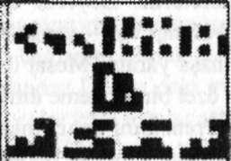

İkisi de beni hayatlarından fırlatıp attılar. Kimse durup da bana yardım etmeyi
düşündü mü? Hayır. Kara bakıp İnuitler'in kaderine hayıflanmakla meşgullerdi.
Ah evet, bu da bana senin hep
krmz
güzel masallar anlattığını ama hiçbir şeyi
değiştirmediğini hatırlatıyor, Iji Amca. Senin tek düşündüğün buydu —
İnuitler'in özgür ruhunu anlatan peri masalları. Soylu halk. Gururlu halk."
"Bu doğru." dedi Akesuk. "Biz gururlu bir halktık."
"Ve bu ne zamandı?"
Akesuk'un sinirlenmesini bekledi ama yaşlı adam yalnızca bıyığım
çekiştirdi. "Sen doğmadan önce." dedi. "Benim kuşağımdaki insanlar herkesin
onları nasıl kuracağını bildiği bir zamanda iglularda doğdu. O zamanlar ateş
yakmak için kibrit yerine çakmak taşları kutlanırdık. Geyikler vurulmaz ok ve
yayla avlanırdı. Qamutiklerimize kar araçları değil haskiler bağlardık. Kulağa
romantik geliyor öyle değil mi? Sanki çok çok uzak bir geçmiş gibi..." Akesuk
eğlenmişti. " E n fazla elli yıl öncesiydi. Etrafına bir bak oğlum. Yaşam
492
biçimimize bak. Demek istediğim iyi şeyler de var. Yeryüzünde çok u kifl
dünyada neler olup bittiğini bizim kadar bilir. Bizimki dahil her iki evden
birinde modemiyle birlikte bir bilgisayar var. Artık kendi ülkemize de sahibi/ "
Kıkırdadı. "Geçen gün nunavut.com'a gönderilen bir soru vardı. Aslında
zararsız görünüyordu. Şu eski iki dolarlık Kanada banknotlarını hatırlıyor
musun? Ön yüzünde, arkasında bir grup İnuit ile Kraliçe Elizabeth vardı.
Adamlardan biri bir kızağın yanında elinde mızrakla görünüyordu. Manzara
cennet gibiydi. Soru şöyleydi: 'Bu sahne gerçekte neyi gösteriyor?' Sence
cevap ne?"
"Bilmem."
"Eh, ben biliyorum. Bu kovulmanın fotoğrafı. Ottavva'daki hükümetin bunun
için çok daha fiyakalı bir terimi var. Buna 'yeniden yerleştirme' diyorlar. Bir
soğuk savaş fenomeni. Ottavva'daki politikacılar yerleşim olmayan Kanada
Kutbu'nda ABD veya Sovyetler Birliği'nin hak iddia etmeyi kafalarına
koyacağından korkuyorlardı; bu yüzden göçebe İnuitler'i kutbun güneyindeki
geleneksel bölgelerinden kuzey kutup dairesindeki Resolute ve Grıse fiyortlarına
kaydırdılar. Oradaki avlanma sahalarının daha iyi olduğunu iddia ettiler ama
bunun tam tersi geçerliydi. İnuitler sanki hayvanmış gibi üzerlerinde rakamlar
yazan köpek tasmaları takmak zorunda kaldılar. Bunu biliyor muydun?"
"Hatırlayamadım."
"Senin kuşağının ve bugün büyüyen çocukların ailelerin neler yaşadığı ile
ilgili en ufak bir fikri bile yok. Ve bu çok önceleri, 1920'lerde beyaz avcılar
ellerinde silahlarla buraya geldiklerinde başladı. Fok ve geyik nüfusunu kırıp
geçirdiler ve bunların tek sebebi qalhınaaq da değil, İnuitler de onları öldürdü.
Yayını tüfekle takas edersen olacağı budur. Her neyse, İnuit halkı yoksulluğa
mahkum oldu. Hiçbir zaman hastalıklar başlarına çok bela olmamıştı ama artık
çocuk felci, tüberküloz, kızamık ve difteri salgınları patlak veriyordu. Bu
yüzden araziyi bırakıp köylere yerleştiler. 1950'lerin sonunda insanlarımız
açlıktan ve bulaşıcı hastalıklardan
krmz
ölüyordu ve hükümet bunun için kılını dahi
kıpırdatmadı. Sonra askeriye Kuzeybatı Eyaleti ile ilgilenmeye başladı ve
geleneksek İnuit av sahalarında gizli radar istasyonları kuruldu. İnuit halkı
yollarına çıkmıştı bu yüzden Kanada hükümetinin teşvikiyle uçaklara tıkılıp,
çadırları, kar kızakları, kanoları ve kayakları olmadan yüzlerce kilometre
kuzeye fırlatıldılar. Ben de genç bir adamken yeniden yerleştirildim. Senin ailen
de. O zamanlar yetkililer bunu yoksul İnuit halkının askeri üsler yakınlarındaki
bölgelerdense kuzeydeki arazide hayatta kalmasının daha kolay olacağını
söyleyerek savundular. Ama yeni yerleşkeler geyik izlerinin ya da yaz beslenme
alanlarının yakınından bile geçmiyordu."
Uzun bir sessizlik oldu. Arada sırada iki narval ortaya çıkıyordu. Anavvak
çapraz kılıçları seyrederek amcasının hikâyesine devam etmesini bekledi.
493
"Yeniden yerleştirilmemizden sonra avlanma sahalarımızın üzerinden
buldozerlerle geçtiler. Geri dönmemizi engellemek için bize eski güzel
hayatımızı hatırlatacak her şey yerle bir edildi. Ve tabii ki geyikler bize uysun
diye alışkanlıklarını değiştirmediler. Ne yiyeceğimiz ne de giyeceğimiz vardı.
Bir iki siksik, yabani tavşan ya da balık avlayamadıktan sonra cesaretin ne
anlamı var ki? İnsanlar istediği kadar kararlı ya da güçlü olsun, kardeşlerinin
ölümünü engellemek için ellerinden gelen hiçbir şey yoktu. Detaylara
girmeyeceğim. Birkaç on yıl içinde sadakaya muhtaç kaldık. Eski yaşam
biçimimiz yok edilmişti ve başka türlüsünü de bilmiyorduk. Sen doğduğun
sıralarda Kanada hükümeti yine bizim için üzülmeye başladı bu yüzden bizim
için evler — d a h a doğrusu kutular— inşa ettiler. Bu tam bir qallunaaq'ın
yapacağı şeydi. Onlar kumlarda yaşar. Eğer bir geziye çıkmak isterlerse altı
tekerlekli kutularla giderler. Kamu kutularında yemek yerler, köpekleri
kutularda yaşar ve içinde uyudukları kutuların çevresinde pencere ve parmaklık
dedikleri başka başka kutular vardır. Bu onların yaşam biçimiydi, bizim değil
ama artık biz de kutularda yaşıyoruz. Kimliğimizi kaybetmemizin bir bedeli
oldu. Alkol, uyuşturucu bağımlılığı ve intihar."
"Babam halkı için hiç mücadele etti mi?" diye yumuşak bir sesle sordu
Anavvak.
"Hepimiz ettik. Biz sürüldüğümüzde ben hâlâ genç bir adamdım. Tazminat
için hareket başlattım. Otuz yıl boyunca haklarımız için mücadele ettik ve
mahkemelerde süründük. Baban da bizimle birlikte çalıştı ama bu onun ruhunu
parçaladı. 1999'dan beri kendi devletimiz, Nunavut var, 'kendi toprağımız'.
Artık kimse bize ne yapmamız gerektiğini söyleyemez ve kimse bizi zorla göç
ettiremez. Ama bizim yaşam biçimimiz, gerçekten bizim olan tek yaşam biçimi
artık sonsuza dek yitirildi."
"Kendinize yeni bir tane bulmanız gerek."
"Sanırım haklısın. Kendine acımanın yardımı dokunduğu görülmüş değil.
Bizler göçerdik, istediğimiz gibi
krmz
gelip gitmekte özgürdük ama artık
toprağımızın sınırlanması fikriyle uzlaşıyoruz. Birkaç on yıl önce tek sosyal
yapımız aileydi. Şeflerimiz ya da liderlerimiz yoktu ve artık înuitler, medeni bir
devlette oiduğu gibi înuitler tarafından yönetiliyor. Mülkiyet fikri bize
yabancıydı ama artık her endüstriyel toplumun gittiği yolu izliyoruz.
Geleneklerimizi canlandırmaya başladık —insanlar yeniden köpek kızakları
kullanıyor, gençlere nasıl iglu kurulacağı ve çakmaktaşı ile nasıl ateş
yakacakları öğretiliyor— ki bu iyi bir şey ama zamanı durdurmayacaktır.
Biliyor musun oğlum, memnuniyetsiz değilim. Dünya dönüyor. Bugünlerde
bizler internetin göçebeleriyiz, veri otobanlarında dolanıyor bilgi toplayıp
biriktiriyoruz. Tüm dünyayı dolaşabiliriz. Gençler değişik ülkelerden gençlerle
sohbet ediyor ve onlara Nunavut'u anlatıyor. Ama hâlâ insanlarımızın çok
494
fazlası intihar ediyor. Derin bir travmayla uzlaşıyoruz. Zamana ihtiyacımız var Yaşayanların umutlan ölenlere kurban edilmemeli."
Anavvak ufuktaki güneşi seyretti. "Haklısın." dedi.
Sonra ani bir dürtüyle Akesuk'a Château'da öğrendiklerini, ne üzerine
çalıştıklarını ve denizde zeki canlılann olduğundan şüphelendiklerini anlattı.
Li'nin talimatlarına itaatsizlik ettiğini biliyordu ama umurunda değildi. Bütün
yaşamı boyunca suskun kalmıştı. Akesuk ailesinden geriye kalan tek kişiydi.
Amcası dinledi. "Bir şamanın öğüdünü dinlemek ister misin?" diye sordu
sonunda.
"Samanlara inanmam."
"Kim inanır? Ama bu bilimle çözebileceğin bir sorun değil. Bir şaman sana
ruhlarla boğuştuğunu söyleyecektir, bir zamanlar yaşayanların şu anda
yeryüzünün canlılarının bedenlerini ele geçirdiğini. Qallunaaq yaşamı
mahvetmeye başladı. Ruhları, denizin ruhu Sedna'yı öfkelendirdiler. Bu
yaratıkların kim olduğunun önemi yok, onlarla savaşmaya çalışırsanız elinize
hiçbir şey geçmeyecek."
"O zaman ne yapmamız gerekiyor?"
"Onları kendinizin bir parçası gibi görün. Bize söylediklerine göre dünya o
kadar küçük bir yer ki, ama işin gerçeği hâlâ birbirimize yabancıyız. Onlarla
irtibata geçin, tıpkı İnuitier'in yabancı diyarıyla yaptığınız gibi! Ayrılık yaraları
iyileştirilse iyi olmaz mı?"
"Onlar insan değil Iji."
"Mesele bu değil. Onlar bu dünyanın bir parçası tıpkı ellerinin ve
ayaklarının vücudunun bir parçası olduğu gibi. Kimse efendilik savaşını
kazanamaz. Savaşlar sadece ölümle son bulur. Gezegende kaç tane zeki yaratık
olduğu ve hangisinin daha üstün olduğunu kim takar? Onlarla savaşmak yerine
onları anlamayı öğrenin."
"Bana epey Hıristiyan vaazı gibi geldi. Öbür yanağını dön falan..."
"Ah hayır." diye kıkırdadı Akesuk.
krmz
"Bu bir şamanın tavsiyesi. Etrafta hâlâ
epey şaman var biliyorsun. Sadece bunu büyük bir mesele yapmıyoruz."
"Hangi şaman..." Anavvak kaşlarını kaldırdı. "Sen değil..."
Akesuk sırıttı. "Eh bazılarının ruhani danışmanlık yapması gerek." Durdu.
"Bak!"
Çok da uzak olmayan bir mesafede bir kutup ayısı narval leşine dalmış,
havaya kalkıp saygılı bir mesafeye çekilmiş olan kuşlan korkutup kaçınnıştı.
Bir yelkovan kuşu hava saldırısı başlattı ama ayı fark etmedi bile. Gözcünün
alamı vermesini gerektirecek kadar kampa yakın değildi ama adam silahını
eline aldı, gözleri olay yerindeydi,
"Nanııq." dedi Akesuk, "Kutup ayısı biz dahil her şeyin kokusunu alıyor."
Anavvak ayıyı seyretti. Korkmamıştı. Bir süre sonra koca yaratık ilgisini
495
kaybetti ve görkemle oradan ayrıldı. Kampa dönerek meraklı bir bakış attı ama sonra bir buz kütlesinin ardında kayboldu.
"Ne kadar ağır hareket ettiğine bak." diye fısıldadı amcası. "Ama o ayı
koşabilir oğlum. Bahse girebilirsin ki koşabilir " Kıkırdadı, sonra anorağının
içine uzandı ve küçük bir heykelcik çıkararak Anavvak'ın kucağına bıraktı.
"Sana bunu vermek için bekliyordum. Her hediyenin uygun bir anı vardır ve
belki de bunu alman için şu an doğru zamandır."
Anavvak oyma heykelciği aldı. Bir kuşun bedenine bir insan kafası
yerleştirilmişti, saç yerine kuştüyleri vardı. "Bir kuş ruhu mu?"
"Evet." Akesuk başıyla onayladı. "Komşularımızdan biri Toonoo Sharky
yaptı. Artık ünlü oldu. Modern Sanatlar Müzesi onun işlerini aldı. Al. Önünde
engeller var. Buna ihtiyacın olacak. Zamanı geldiğinde düşüncelerini doğru
yere yönlendirecektir."
"Neyin zamanı geldiğinde?"
"Bilincin yükselecek." Akesuk'un elleri birer kanat oldu. "Ama çok uzun
bir süre uzak kaldın. Pratiğin eksik. Belki de sana kuş ruhunun gördüklerini
söyleyecek birine ihtiyacın vardır."
"Bilmece gibi konuşuyorsun."
"Bu bir şamanın ayrıcalığıdır."
Üstlerinden bir kuş uçtu.
"Bir Ross martısı." dedi Akesuk. "Şimdi gerçekten şanslısın Leon. Her yıl
buraya binlerce kuş gözlemcisinin sırf böyle bir martı görebilmek için geldiğini
biliyor musun? O kadar nadirler. Eh artık endişelenecek bir şeyin yok. Ruh
sana bir işaret gönderdi."
Daha sonra uyku tulumundayken Anavvak bir süre uyanık yattı. Öğleden
sonra güneşi çadırın üzerinde parlıyordu. Gözcünün "Nanuq, nanuq!" diye
bağırdığını duydu. Kutup Denizi'ni düşündü ve altındaki bilinmeyen dünyayı
hayal etti. Zihni, akıntıyla Byiot Adası'na gelip orada donmadan önce
Grönland'daki bir buzuldan kopup gelen krmz
bir buzdağının tepesine varıncaya dek
sürüklendi. Sonunda rüzgârlar ve dalgalar onu buzdan koparmış ve daha
güneye sürüklemişlerdi. Anavvak rüyasında buzdağının tepesine giden kar kaplı
dar bir patikadan çıktı. Orada eriyen sulardan zümrüt yeşili bir göl oluşmuştu.
Baktığı her yerde sakin, mavi denizi görüyordu. Zamanla buzdağı eriyerek onu
bir bulmacanın çözüleceği sakin suların dibine, tüm yaşamın kaynağına
götürecekti.
Belki de orada, kendisine yardım edebilecek bir şaman olabilirdi.
496
Frost
Dr, Stanley Frost aynı fikirde değildi.
Enerji endüstrisinin araştırmalarına göre Pasifik'teki ana deniz altı metan
hidrat yatakları, Japonya yakınlarında ve Kuzey Amerika'nın batı
kıyılarındaydı; ayrıca Okhotsk Denizi, Bering Denizi ile daha kuzeydeki
Beaufort Denizi'nde de başka rezervler bulunmuştu. Atlantik'teki büyük
yataklar hemen Amerika'nın dibindeydi. Daha büyük rezervlerin Karayipler
ve Venezüella sahili açıklarında olduğu biliniyordu, Güney Amerika ve
Antarktika arasında uzanan Drake Geçidi civarındaki deniz tabanı da hidratlar
açısından zengindi. Yamacın çökmesinden önce Norveç açıklarındaki hidrat
yatakları haritalandırılmıştı, tıpkı doğu Akdeniz ve Karadeniz'dekiler gibi.
Ama Afrika'nın kuzeybatı kıyılarında, özellikle Kanarya Adaları civarında,
metan rezervleri zayıf görünüyordu.
Ve Frost'a göre bu çok anlamsızdı.
Çünkü o bölgede soğuk, besin açısından zengin su, derinliklerden yükselir,
planktonlara besin sağlayarak çoğalmalarını sağlar ve bu da muhteşem Kanarya
Adaları balık sürülerinin artmasını teşvik ederdi. Bu açıdan adaları çevreleyen
deniz tabanının hidratlarla kaplı olması gerekiyordu çünkü organik yaşamın
deniz: doldurduğu suların derinliklerind krmz
e metan birikirdi.
Kanarya Adaları'udaki fark çürüyen malzemenin çökebileceği alan
olmamasıydı. Adalar, milyonlarca yıl önce volkanik patlamalarla oluşmuşlardı
ve deniz tabanından kule gibi dimdik yükseliyorlardı. Tenerife, Gran Canaria,
La Palma, Gomera, El Hierro —okyanus tabanından, 3000-3500 metre
derinlikten yükselen volkanik kayaların tepe noktalarıydı. Çökelti ve organik
maddeler dik yamaçlarına tutunamadan dibe kayıyorlardı. Bu yüzden
konvansiyonel haritalar Kanarya Adaları 'ndaki metan yataklarını
göstermiyordu ve bu —Frost'un tahminlerine göre— yapılan hesaplardaki ilk
yanlıştı.
497
Kanarya Adaları'nın görünen tepelerini oluşturduğu deniz volkanlarının
genelde düşünüldüğü kadar dik olmadıklarından şüpheleniyordu. Dik
olduklarını inkâr etmenin anlamı yoktu ama yüzeyleri hiçbir şekilde dümdüz ve
dimdik değildi. Frost, en sarp stratovolkanlarda bile bayır ve teraslar
bulunduğunu bilecek kadar uzun zamandır volkanlar üzerinde çalışıyordu.
Kanarya Adaları'nda büyük metan yatakları olduğuna ve insanların doğru
yerleri araştırmadıklarından dolayı, daha bulunmamış olduklarına kesinlikle
inanıyordu. Böyle bir durumda hidratlar deniz yatağında öbekler halinde
yatmak yerine kayaların içinden ince damarlar şeklinde akacaklardı. Ve
Frost'un çökeltinin yerleştiği teraslarda da, hidrat bulunacağına kuşkusu yoktu.
Frost bir hidrat uzmanı değil de volkanolog olduğu için Bohrmann'ı
yardıma çağırdı. Potansiyel risk taşıyan adaların bir listesini çıkarmıştı: La
Palma, Havvaii ve Cape Verde, ardından daha güneydeki Tristan da Cünha ve
Hint Okyanusu'ndaki Reunion. Hepsi de birer potansiyel saatli bombaydı ama
La Palma en büyük riski taşıyordu. Frost'un fikri doğru çıkarsa, La Palma'daki
Cumbre Vieja dağ sırası, milyonlarca insanın yaşamında iki bin metre
yükseklikten sallanan bir Demokles'in Kılıcı idi.
Bohrmann'ın çabaları sayesinde Frost ve ekibi ünlü Polarstem'i bölgeye
yapılacak keşif için ödünç alabilmişlerdi. Araştırma gemisinde, Sonne'dc
olduğu gibi bir Victor 6000 vardı. Polarstern balinala. saldırıdan uzak tutmaya yetecek kadar büyüktü ve midye sürüleri, denizanası veya başka türden istilacı
organizmaların zamanında tespit edilebilmesi için deniz altı kameralarıyla
donatılmıştı. Victor suya indirilirken Frost'un onu bir daha görüp
göremeyeceğine dair hiçbir fikri yoktu. Bütün alet ve ekipmanlar derinliklerde
kayboluyordu.
Deneyip en iyisini umut etmekten başka çareleri yoktu. Bu önerisine kimse
karşı çıkmadı.
Victor, La Palma'nm batı sahili açıklarında Polarstern'den indirildi. Kıyı
görüş mesafesindeydi. Robot aşağı
krmz
daldı, sistematik olarak volkanın dik
yüzeyini inceliyordu. Sonra, dört yüz metre derinlikte birbirinin üstüne binen
bir dizi teras göründü, kayalardan bir sıra balkon gibi çıkmışlardı. Üstleri
çökelti kaplıydı.
Victor Frost'un öngördüğü hidrat rezervlerini bulmuştu.
Pembe vücutlardan bir kütle üzerlerinde kıvranıyordu: kıskaç gibi
çeneleriyle kıllı solucanlar.
498
La Pal ma, Kanarya Adatan, Kuzey Batı Afrika Kıyısı
"Peki solucanlar Japonya'da veya Amerika'da çok daha fazla zarar verebilecekken,
bir tatil beldesindeki bu hareketliliğin sebebi ne?" diye sordu Frost. "Kuzey Denizi nüfusun yoğun olduğu bir bölgeydi. Amerika sahili insan kaynıyor, Honshıı da
aynen öyle, ama bu bölgelerdeki solucan kolonileri bir dalga yaratmaya bile
yetmeyecek büyüklükte. Ve şimdi de burada, Afrika'nın kuzeybatı kıyısı
açıklarında solucanlar bulduk. O zaman kendimize neden sorusunu sormalıyız."
Her zamanki gibi beyzbol şapkasını takmış ve petrol işçisi takımlarını
giymiş olan Frost, ada boyunca uzanan volkanik dağ sırasının batı yüzünde
duruyordu. Devasa erozyon krateri ünlü Caldera de Taburiente kuzeydeydi ve
dik kaya duvarları ile çevrelenmişti. Ardında dağ sırası güneye devam ediyor,
volkanik koniler dizisi üzerinde uzanıyordu.
Frost'un yanında Bohrmann ve De Beers Şirketler Topluluğu'ndan iki
temsilci vardı; bir yönetici ve Jan van Maarten adında bir teknoloji uzmanı. Bir
tepede toplanmışlardı, helikopterleri yan taraflarındaki kum piste inmişti.
Oradan kraterin içindeki yemyeşil manzaranın büyüleyici güzelliğine
bakıyorlardı, Uzun bir zirveler dizisi göğe yükseliyordu. Kara lav izleri kıyıya
kadar iniyor ve narin yeşilliklerle lekeleniyordu. La Palma'daki patlamaların
arasında uzun aralıklar vardı ama yine de krmz
bir sonraki patlama her an olabilirdi.
Jeolojik açıdan Kanarya Adaları hâlâ göreceli olarak gençti. 1971'de yeni bir
volkan, Teneguia kendini belli etmiş ve adanın güney ucunda patlayarak karayı
birkaç hektar uzatmıştı. Teknik olarak dağ sırası birçok bacası olan tek bir
volkandı, bu yüzden insanlar ne zaman adanın volkanik durumunu konuşsalar
genelde ona bir bütün olarak Cumbre Sırtı derdi.
"Sorumuz şudur," dedi Bohrmann, "daha çok hasar verebilmek için hangi
bölgeleri kolonize etmeliler?"
"Gerçekten bu kadar detaylı planlandığını düşünmüyorsunuz, öyle değil
mi?" diye. sordu yönetici kadın. Aklı karışmışçasıfta kaşlarını çattı.
499
"Şu anda her şey kuramsal." dedi Frost. "Ama burada olayların arkasında bir zekânın var olduğunu farz edersek, inanılmaz stratejik hareket ediyorlar.
Kuzey Denizi felaketinin sonrasında herkes bir sonraki afetin yoğun nüfus
bölgelerinden birinde olacağım düşündü. Ve hakikaten solucanlar böyle
bölgelerde bulundu, ama küçük sayılarda. Bu sözde orduların tükenmesi veya
yeni solucan ordularının yaratılmasının zaman alması, en bariz açıklama
olabilir. Ama bence dikkatimiz özellikle yanlış yönlendirildi. Gerhard ve ben,
Kuzey Amerika ve Japonya'daki güçsüz istilaların sadece bir dikkat dağıtma
taktiği olduğuna eminiz."
"Ama La Palma hidratlarına saldırmanın amacı ne olabilir ki?" diye sordu
kadın. "Kimse buranın yüksek aktiviteye sahip bir bölge olduğunu iddia
edemez."
De Beers Şirketi, Frost ve Bohrmann metan yiyen solucanları
vakumlayacak bir teknoloji aradıklarında meseleye dahil olmuştu. Namibya ve
Güney Afrika sahillerinin deniz tabanı onlarca yıldır elmaslar için taranıyordu.
Çok çeşitli şirketler işin içindeydi ama sektördeki en büyük oyuncu, 180 metre
aşağıdaki madencilik çalışmaları için gemiler ve platformlar kullanan
uluslararası elmas şirketi De Beers'ti. Birkaç yıl önce De Beers daha derinlerde
madencilik yapabilmek için yeni yollar geliştirmeye başlamıştı; uzaktan
kumanda edilebilen deniz altı paletli kazıcıları ile kumu ve mineralleri
vakumluyor, bunları emme boruları vasıtasıyla yüzeydeki destek gemilerine
iletiyorlardı. En son projeleri, yatay zemine gerek duymadan iş görebilecek
daha esnek bir sistem geliştirmekti. Yeni teknoloji, uzaktan kumandalı bir
emme borusu ile dik yüzeyleri yakumlama yeteneğine sahip olacaktı. Teorik
olarak sistem binlerce metre derinlikte işleyebiliyordu ama öncelikle o
uzunlukta bir boru inşa etmek gerekiyordu;
Komite, De Beers tarafından bu işle görevlendirilen ekiple doğrudan temasa
geçmeye karar vermişti. Kuruluşun
krmz
iki temsilcisine, şimdiye kadar sadece
teknolojilerinin dünya çapında bir felaketi önleyebileceği söylenmişti ve bunu
başarmak için yüzlerce metre uzunluğunda bir emme borusuna acilen ihtiyaç
vardı. Frost, Cumbre Vieja'ya bir ziyarette bulunmayı teklif etmişti; görevleri
başarısız olduğu takdirde insanlığın başına neler geleceğini burada anlatacaktı.
"Ah, manzaranın sizi aldatmasına izin vermeyin." dedi. "Burada epey bir
hareketlilik var."
Serin deniz melteminde şapkasından çıkan saç telleri uçuşuyordu. Mavi
gökyüzü, güneş gözlüklerinin camına yansıyordu. Fred Çakmaktaş ile
Terminatör karışımı bir şeye benziyordu ve sesi huzurlu çam ormanlarına kadar
taşınıyordu.
"Eğer iki milyon önceki volkanik patlama Kanarya Adalan'nı denizden dışarıya
yükseltmeseydi, şu anda burada duruyor olamazdık. Cennet gibi görünebilir ama
500
sizi aldatmasın. Aşağıda bir çiftçi köyü var, adı Tijarafe ve harika bir yer, muhteşem quesos de almendras satarlar. Her yıl sekiz Eylül'de Fiesta del Diablo kutlamalarını yaparlar. Bir şeytan köy meydanı boyunca koşarak alev kusar. Neden? Çünkü
adalılar Cumbre'nin doğasını bilirler. Ateş ve patlamalar burada doğal yaşamın bir
parçasıdır. Bunu bilirler ve solucanların arkasındaki güç de biliyor. Adanın nasıl
yaratıldığını biliyor. Ve eğer bir şeylerin nasıl yapıldığını bilirseniz, genellikle zayıf
noktalarını da bulabilirsiniz."
Frost bayırın kenarına doğru birkaç adım attı. Gevrek volkanik kayalar,
adamın Doc Marten botlarının altında çıtırdadılar. Aşağıda uzakta pırıl pırıl
dalgalar kıyıya vuruyordu.
"1949'da Cumbre Vieja bir patlamayla harekete geçti. Patlama
kraterlerinden birinden, San Juan volkanından gelmişti. Çıplak gözle görmek
zordur ama o zamandan beri kilometreler boyunca bir fay, adanın batısından
durduğumuz yere kadar uzanıyor. Büyük bir olasılıkla, bu kırılma La Palma'nın
derinlerine kadar iniyor. Patlama sırasında, Cumbre Vieja dağ sırasının bir
bölümü dört metre kadar okyanusa kaydı. Bir sonraki patlamada, kayalarda
kısılıp kalmış alışılmadık derecede yüksek miktarda zemin suyu sayesinde,
adanın batısındaki bölgelerin tamamen denize çökmesi büyük olasılık. Sıcak
magma volkanik bacaya doluştuğunda, su bir anda genleşecek ve buharlaşacak.
Ortaya çıkacak basınç, batı kanadını rahatlıkla suya doğru patlatabilir. Daha
şimdiden dengesizleşti ve doğu ile güney kanatlan üzerine baskı yapıyor. 500
kilometreküp kadar kaya okyanusa çökecek."
"Bunu okumuştum." dedi van Maarten. "Kanarya Adaları yetkilileri bu
teorinin şüpheli olduğunu söylüyorlardı."
"Şüpheli mi?" Frost, Eriha'nın trompetleri gibi gürledi. "Asıl•şüpheli olan
bir şey varsa, o da açıklamalarında sorundan bahsetmemeleri. Tek
umursadıkları turistleri korkutup kaçırmamak. Ama bu sorunu ortadan
kaldırmayacak. Dünya şimdiden daha küçük ölçeklerde benzer afetleri gördü.
1741'de Japonya'da Oshima-Oshima patlayarak otuz metre yüksekliğindeki
dalgaları tetikledi. 1888'de Yeni
krmz
Gine'deki Ritter Adası'nın çöküşüyle daha
fazla dalga oluştu ama orada çöken toprak miktan buradaki olasılığın ancak
yüzde biriydi. Bir GPS ağı, sürekli olarak Havvaii'deki Kilauea yanardağını
gözetleyerek, herhangi bir hareketlenmeye dair bir işaret arıyor ve gerçekten de
hareket ediyor. Güneydoğu tarafı yılda on santimetrelik bir hızla denize doğru
kayıyor ve hızlanırsa Tann yardımcımız olsun. Sonuçları hayal edilemeyecek
kadar korkunç olacaktır. Volkanik adalar yıllar geçtikçe dikleşmeye meyillidir.
Eninde sonunda bir bölümleri kırılır. La Palma'daki yetkililer gerçekle
yüzleşmek istemiyorlar. Mesele bunun olup olmayacağı değil, ne zaman
olacağıdır. Yüz yıl mı? Bin yıl mı? Emin olamayacağımız tek şey zamanlaması.
Buradaki volkanlar pek uyan vermezler."
501
"Peki adanın yarısı denize düşerse ne olur?" diye sordu yönetici.
"Kaya kütlesi, çok büyük miktarlarda suyun yer değiştirmesine sebep olur."
dedi Bohrmann. "Ve bu su gitgide yükselir. Tahminlerimize göre, dalga saatte
350 elli kilometrelik bir çarpma hızına sahip olacaktır. Dökülen enkaz, deniz
yatağında altmış kilometre boyunca yayılacak ve suyun toprak kaymasının
üzerinden aşmasını engelleyerek, yer kaymasının sebep olduğundan çok daha
fazla suyun hareketlenmesine sebep olan dev bir hava kabarcığı yaratacak.
Sonra neler olacağı üzerine tartışmalar var ama senaryolardan hiçbiri iç
rahatlatacak türden değil. Toprak kayması, La Palma açıklarında muhtemel
yüksekliği 600 metreden 900 metreye kadar değişecek bir mega-dalga
yaratacak. Dalga, Atlantik boyunca saatte 1000 kilometre hızla ilerleyecek.
Depremlerin aksine, toprak kaymaları ve yamaç kırılmaları noktasal olaylardır,
bu da dalganın enerjisinin okyanusa yayıldıkça dağılacağı anlamına gelir.
Kaynağından uzaklaştıkça düzleşecektir."
"Bu da bir şey," dedi teknoloji uzmanı.
"Pek değil. Kanarya Adaları bir anda silinip süpürülecek ve bir saat sonra yüz
metre yüksekliğindeki bir tsunami Afrika'nın batı Sahra kıyılarına vuracak. Şöyle
düşünün, Avrupa tsunamisi fiyortlarda 40 metre yüksekliğe erişmişti ve hepimiz
orada neler olduğunu biliyoruz. Patlamadan altı ile sekiz saat sonra, 50 metre
yüksekliğinde bir dalga Karayipler'e vuracak ve Antiller'i harap ettikten sonra Nevv
York'tan Miami'ye kadar Amerika'nın doğu sahilini sular altında bırakacak. Çok
geçmeden dalga benzer şiddetle Brezilya'yı vuracak. Daha küçük dalgalar İspanya,
Portekiz ve Britanya Adalan'na kadar erişecek. Bunun sonuçlan Orta Avıupa'da
bile mahvedici olacak. Avrupa ekonomisi çökecektir."
De Beers temsilcileri bembeyaz kesilmişti. Frost onlara sırıttı. "'Derin
Darbe'yi görmediniz sanırım?"
"Filmden mi bahsediyorsunuz? O
krmz
dalga çok daha büyüktü." dedi yönetici.
"Yüzlerce metre yüksekliğindeydi."
"50 metre Nevv York'u dümdüz etmeye yeter. Dalganın darbesi bütün
ABD'nin bir yılda kullandığından daha fazla enerji açığa çıkaracaktır. Bir
binanın ne kadar yüksek olduğu önemli değildir—tsunaminin darbesini yiyen
temelidir. Binanın geri kalanı, kaç katlı olursa olsun çökecektir. Ve hiçbirimiz
herkesi kurtaracak bir Bruce VVillis değiliz." Dağ sırasının sonunu işaret etti.
"Batı kanadım çökertmek için iki yol var: Ya Cumbre Vieja patlayacak ya da
bir deniz altı heyelanı olacak. Solucanlar bir yer kayması için uğraşıyorlar —
Avrupa'da yaptıklarının minyatür bir versiyonu ama gücü yanardağın su
altındaki bölümünü koparmaya ve dibe sürüklemeye yetecektir. Kayalar,
denizin derinliklerine batacak ve bu sayede küçük bir depremi tetikleyerek
Cumbre sırtını dengesizleştirecektir. Deprem, bir patlamayı bile tetikleyebilir
ama her halükarda batı kanadı kopacak. Bu muhakkak gerçekleşecek ve
önümüzde çok büyük bir felaket var. Norveç açıklarındaki solucanların
görevlerini bitirmeleri birkaç hafta almıştı. Burada işler daha da lıı/h
ilerleyecektir."
"Ne kadar vaktimiz var?"
"Daha şimdiden çok geç kaldık sayılır. Bu solucanların hareketleri epey
kurnazca ve bizim ulaşmamızın zor olacağı noktalarda yerleşmişler. Tüm plan,
açık denizde yayılacak mega-dalgaların gücüne dayanıyor. Şimdiden Kuzey
Denizi'nde bir puan aldılar ama o buna kıyasla küçük ölçekteydi. Eğer bu
zararsız görünen küçük ada okyanusa çökerse, insan medeniyeti işlerin ne kadar
zorlaşabileceğini görmüş olacak."
Van Maarten çenesini ovuşturdu. "Emme borusu için hazırlamış olduğumuz
bir prototip var. 300 metre kadar derinde çalışabiliyor ama..."
"Boruyu uzatabiliriz." diye önerdi yönetici.
"Hızla bir çözüm bulmamız gerekiyor ve eğer üzerinde çalıştığımız diğer
her şeyi bırakırsak... Beni asıl endişelendiren destek gemisi."
"Bir geminin büyüklüğü yetmez." dedi Bohrmann. "Milyarlarca solucandan
oluşan bir koloni muazzam bir biyokütle demektir. Bunu pompalayacak bir yer
bulmanız gerek."
"Asıl sorun bu değil —bir çeşit nakli her zaman yapabiliriz. Hayır, ben asıl
borunun kc ol panelinin olacağı komuta gemisini düşünüyordum. Eğer
borunun uzunluğunu 400 ya da 500 metreye kadar uzatacaksak, bunu
taşıyabilecek kadar büyük bir gemiye ihtiyacımız olacak. Bu yarım kilometrelik
bir boru demek! Kurşun gibi ağır ve derin deniz kablolarından daha kalın
olacaktır. Onu sarıp kaldırma imkânımız yok. Üstelik boruyu yönlendirirken
geminin sabit kalmasına ihtiyacımız var. Bir saldırıdan endişe etmemiz
gerektiğini sanmıyorum ama hidrostatik dert olacaktır. O uzunlukta bir boru,
geminin sudaki dengesini etkilemeden öylece bir taraftan aşağı sarkıtılamaz."
"Bir tarak gemisine ne dersin?"
"Yeteri kadar büyük değil." Adam bir krmz
an düşündü. "Bir sondaj gemisi belki.
Hayır... En iyisi bir yüzer platform. Onlarla önceden çalışmışlığımız var. Bir
çeşit duba sistemine ihtiyacımız olacak, ideal olarak yarı deniz altı bir yapı, şu
açık deniz endüstrisinin kullandığı türden bir şey —yalnız biz onu bir noktada
demirlemek istemiyoruz. Suda normal bir gemi gibi dolaştıracağız. Manevra
kabiliyetinin olması gerek." Diğerlerinden uzaklaştı; rezonans frekansları ve
dalga değişkenleri ile ilgili bir şeyler mırıldandı. Sonra yanlarına geri döndü.
"Bir yan denizaltı işi görür. Sabittir, mobildir ve vinç kolu için mükemmel bir
alan sağlar ki unutmayalım o da epey ağır olacak. Namibya'da bize rahatça
uyacak bir yan denizaltı var. Her birinde altı bin beygir gücünde bir motor olan
iki pervanesi var. Eğer ihtiyacımız olduğunu düşünürsek ona fazladan birkaç
itici ekleyebiliriz."
"Heerema mı?" diye sordu yönetici.
"Doğru."
"Ondan kurtulmak istediğimizi sanıyordum."
"Daha hurdalığa çıkmaya hazır değil. İki ana dümeni var ve güverte altı
adet büyük kolonla destekleniyor — t a m ihtiyacımız olan şey. Evet, ]978'de
inşa edilmiş ama işimizi görecektir. En basiı çözüm bu. Bir vinç kulesine
ihtiyacımız olmaz, onun yerine iki ayrı vincimiz olur. Birini boruyu indirmek
için kullanırız. Solucanları yukarı pompalamak dert olmaz. Ve solucanları
boşaltmak için gemileri bağlama şansımız olur."
"Kulağa iyi geliyor." dedi Frost. "Ne zaman hazır olur?"
"Normal koşullarda altı ay içinde,"
"Ya bu koşullarda?"
"Hiçbir şey için söz veremem. Eğer hemen başlarsak, altı ile sekiz hafta
arası." Adam ona baktı. "Onu en kısa zamanda hazır etmek için gücümüzün'
yettiği her şeyi yapacağız. Bu tür şeylerde gayet iyiyiz. Ama bu sürede
yetiştirmeyi başarırsak, bunu yine de bir mucize olarak kabul etmelisiniz.."
Frost başını sallayarak onayladı. Atlantik'e doğru baktı. Masmavi, önlennde
uzanıyordu. Suyun altı yüz metrelik bir duvar halinde yükselmesini aklında
canlandırmaya çalıştı.
"Dert değil." dedi. "Bir mucizeye ihtiyacımız var."
krmz
504
INDEPENDENCE
Matematik biliminin altında yatan temel prensipler olduğu gibi, en
önemlisi yaşam hakkı olan ve insan ahlakından bağımsız bir evrensel
haklar ve değerler yasası olduğuna inanıyorum. Sorun bunu nerede
bulabileceğimizde yatıyor. Bu yasayı insanlıktan başka kim
uygulayabilir? Algımızın sınırlarının dışında haklar ve değerler
olduğunu kabul etsek bile, algılayabildiklerimiz ile sınırlıyız. Bu
durum, fareyi yemesinde ahlaki açıdan sorun olup olmadığını bir
kediye sormak kadar anlamsızdır.
Leon Anawak, "Bireysel Farkmdalık ve Bilinç"
krmz
505
Independence, G r ö n l a n d Denizi
Samantha Crovve notlarını bıraktı ve pencereden dışarı baktı. CH-53 Supef
Stallion model helikopter hızla alçahyordıı. Güçlü bir esinti ağır helikopteri
salladı. 30 metrelik koca araç deniz üzerinde süzülen açık gri renkte dev bir
platforma doğru dikine iniyordu. Crovve, bu kadar büyük bir aracın nasıl
yüzebildiğim merak etti; bir yandan da üzerine inebilecekleri kadar büyük olup
olmadığını düşünüyordu.
İzlanda'nın kuzeydoğu sahilinden 950 kilometre açıkta olan USS
Independence LHD-8, Arktik Okyanusumun derin deniz havzası üzerinde
ilerliyordu. Grönland Denizi'nde yüzer bir şehir gibiydi. Görünümü tıpkı Alien
filmindeki uzay gemisi gibi karanlık ve ürkütücüydü. Amerikan Deniz
Kuvvetleri, onu iki hektarlık özgürlük ve 97000 tonluk diplomasi diye
tanımlıyordu. Bundan sonraki iki hafta boyunca, Dünya nm en büyük taktik
helikopter taşıyıcısı Crovve'un evi olacaktı; yeni adresi şuydu: USS
Independence LHD-8, 75 derece kuzeyde, deniz tabanından 3500 metre
yukarda.
Görevi: temas kurmak ve bir diyalog başlatmak.
Helikopter yan yatarak döndü.
krmz
Stıper Stallion iniş noktasına yöneldi ve
yavaşça zemine dokundu. Crovve, yan camdan helikopteri ona ayrılmış park
alanına yönlendiren sarı gömlekli bir adam gördü. Mürettebattan biri uzanarak
kadının emniyet kemerini açtı, sonra da can yeleğini, koruma gözlüklerini ve
kulaklıklı kaskını çıkarmasına yardım etti. Uçuş türbülanslı geçmişti, ve Crovve
bacaklarının titrediğini hissediyordu, Sendeleyerek helikopterin arkasındaki
rampadan indi ve Süper Stallion'un kuyruğunu geçtikten sonra etrafına baktı.
Uçuş güvertesinde sadece birkaç helikopter gözüküyordu. Sonsuz gibi
görünen asfaltta gözlerini gezdirdi. 257,25 metre uzunluk ve 32,6 metre
genişlikteydi; sabitleme direkleri ile doluydu. Crovve geminin tam boyutlarım
biliyordu. Bir matematikçi olduğu için kesin sayıları severdi; yola çıkmadan
506
önce Independence hakkında bulabildiği her şeyi okumuştu. Ama şu anda o istatistikler gerçeğin yanında cüce gibi kalıyordu: Independence, teknik
özelliklerden, şemalardan ve planlardan çok daha büyüktü. Havada, biraz tuz
ve ısınmış lastik ile karışmış güçlü bir gaz ve yağ kokusu vardı. Sert bir rüzgâr,
bu koku karışımını güverteden havalandırıp vücudunun etrafında dolandırdı.
Normalde ziyaret etmek isteyeceği bir yer değildi.
Koruyucu kulaklıklar takmış ve parlak renkli gömlekler giymiş adamlar bir
o yana bir bu yana koşuşturuyorlardı. Bir beyaz gömlekli ona doğra yaklaştı.
Crovve hatırlamaya çalıştı. Beyaz, güvenlik personelinin rengiydi. Sarı
gömlekliler helikopterlerin inişinden, kırmızı gömlekliler ise yakıt ve
cephaneden sorumluydular. Kahverengi gömlekliler de yok muydu? Ve bir de
mor renkliler. Kahverengi gömlekliler ne iş yapıyordu?
"Beni takip edin." Adam yavaşlayan rotorun gürültüsü arasından bağırdı.
Uçuş güvertesinin sancak tarafından büyük bir apartman bloğu gibi yükselen
üst yapıyı işaret ediyordu. Yapı büyük antenler ve sensörlerle donatılmıştı.
Crovve'un sağ eli bilinçsizce cebine gitti ama sonra sigaralarının, üzerindeki
tulumun altında kalan ceketinin cebinde olduğunu hatırladı. Helikopterde de
sigara içememişti. Güçlü rüzgârlar eşliğinde Kuzey Kutbu'nda yapılacak
yolculuk gözünü korkutmuyordu ama saatlerce nikotinsiz kalmak şakası
yapılacak bir konu değildi.
Adam bir kapıyı açtı ve Crovve üst yapının, ya da denizcilerin verdiği isimle
Ada'nm, içine girdi. Arka arkaya kapılardan geçerek iç kısma geldiklerinde,
onları temiz bir hava karşıladı. Crovve'a göre Ada daha çok bir mağaraya
benziyordu. İçerisi fazlasıyla sıkışıktı. Beyaz gömlekli görevli, kadını
üniformalı, uzun boylu ve siyahi bir adama teslim etti. Adam kendini Binbaşı
Salomon Peak olarak tanıttı, ve el sıkıştıklarında çok resmi davrandı; sanki
sivillerle iletişim kurmakta çok az tecrübesi varmış gibiydi. Geçen haftalar
içinde Crovve onunla birkaç kez konuşmuştu ama sadece telefonla. Dolambaçlı
bir koridordan geçtiler ve dik
krmz
merdivenlerden geminin içlerine doğru indiler.
Crovve'un çantalarını taşıyan askerler, onları takip ediyordu. Duvarlardan
birinde büyük harflerle '2. KAT' yazılıydı."Herhalde yerleşip rahatlamak
istersiniz," dedi Peak. Geçiş yolunun ilk yanında sıralanmış kapılardan birini
açtı. Kapı beklenmedik genişlikte ve güzel dekore edilmiş bir kabine açılmıştı;
bir odadan çok bir süiti andırıyordu. Crovve, helikopter taşıyıcılarının yaşama
alanlarını minimumda tuttuğunu ve birliklerin koğuşlarda uyuduğunu bir
yerlerde okumuştu. Peak'e bunu sorduğunda adam kaşlarını kaldırdı."Tabii ki
sizi askerlerle aynı yerde yatırmayacaktık." dedi. Dudaklarında bir gülümseme
ibaresi oluştu. "Donanma, konuklarını ağırlamayı iyi bilir. Burası Flaggland.
"Flaggland?"
"En üst düzey konaklama alanı. Amiraller ve personelleri için. Gemi tam
507
kapasite dolu olmadığından, herkese yetecek kadar yerimiz var. Flaggland'i
kadınlara ayırdık, erkekler ise subay odalannda kalacak. İzin verir misiniz?"
Kadının önünden geçti ve başka bir kapıyı açtı. "Banyo."
"Etkilendiğimi söylemeliyim."
Askerler çantalarını getirdi.
"Televizyonun altında bir mini-bar var." dedi Peak. "Sadece alkolsüz içkiler.
Tura başlamamız için yarım saat sonra geri gelsem, size uygun olur mu?"
"Tabii." •
Crovve adam kapıyı kapatana kadar bekledi ve sonra çılgın gibi küllük
aramaya başladı. Büfenin içinde bir tane buldu, tulumunu parçalarcasına çıkardı
ve ceketinin ceplerini karıştırdı. Ezilmiş paketi dışarı çıkarttı. Bir sigara yakarak
derin bir nefes çektikten sonra tekrar yaşadığını hissetmeye başlamıştı.
Yatağının ucunda oturdu. Günde iki paket. Sigarayı bırakaınıyordu. İki kere
denemiş ve başaramamıştı.
Belki de başarmak istemiyordu.
İkinci sigaradan sonra duş yaptı, kot pantolon, spor ayakkabı ve bir kazak
giydi. Üçüncü sigarasını yaktı ve sonra bütün dolapları ve çekmeceleri açtı.
Kapı vuruluncaya kadar geçen zamanda kabini o kadar dikkatli incelemişti ki,
tam bir envanter listesi çıkarabilirdi. Her şeyi en baştan bilmeyi severdi.
Koridordaki Peak değil, Leon Anavvak'tı.
"Sana tekrar karşılaşacağımızı söylemiştim." diyerek sırıttı.
Crovve kahkaha attı. "Ve ben de balinalarını bulacağını söylemiştim. Seni
görmek güzel, Leon. Duyduğuma göre burada olmamı sana borçluymuşum."
"Kim söyledi?"
"Li."
"Ah, zaten her halükarda burada olacaktın. Seni rüyamda görmüştüm."
"Hadi canım."
"Merak etme —rüyamda iyi bir ruhtun. Uçuş nasıldı?
"Biraz sallantılı. En son gelen benkrmz
miyim?
"Evet, geri kalanımız Norfolk'ta gemiye bindik."
"Arecibo'dan yola bir türlü çıkamadım. Bir proje üzerinde çalışmayı
bırakmanın ne kadar efor sarf ettirdiğine inanamazsın. Şu anda kimsenin küçük
yeşil adamlan arayacak parası olmadığından SETİ çalışmalarını durdurmak
zorunda kaldık."
"Büyük ihtimalle istediğimizden çok daha fazla yeşil adam bulacağız." dedi
Anavvak. "Hazır mısın? Peak her an burada olabilir. Independence'ta olan biten her şeyi göstereceğiz ve ondan sonrası sana ait. Herkes çok heyecanlı. Haberin
olsun, şimdiden sana bir isim taktılar."
"Bir isim mi? Bana ne diyorlar?"
"Bayan Uzaylı."
508
"Ah, gerçekten mi? Jodie o filmde beni oynadıktan sonra, bir süre h e r k e s beni Bayan Foster diye çağırmıştı." Crovve kafasını salladı. "İyi, peki, neden
olmasın? Kimlik kartım yanımda mı? Evet. Hadi gidelim, Leon."
Peak, ona 2. KatTn her yerini gezdirdi. Tura pruva tarafından başladılar ve
geminin ortasına doğru ilerlediler. Crovve, koşu bantları ve ağırlık makinaları
ile dolu olan spor salonunu takdir etti. İçi bomboştu. "Normal şartlarda içeride
kalabalıktan hareket edemezsiniz." dedi Peak. Independence üç bin kişilik
personeli barındırabilir. Şu anda sadece iki yüz kişi var."
Astsubay odalarının yanından geçtiler —rahat ranzalar, yeterli depolama
alanı, katlanır bir masa ve sandalyelerle donatılmış dört ya da altı kişilik
koğuşlardı.
"Konforlu." dedi Crovve.
"Ne açıdan baktığınıza bağlı. Yukarda işler kızıştığında, uyuyabilmek pek
mümkün olmaz. Uçuş güvertesi üzerinde alçalıp yükselen helikopterlerin ve
dikey kalkan jetlerin gümbürtüsü, başınızın birkaç metre üstündedir. En büyük
zorluğu yeni personel çeker. İlk başta bütün güçleri tükenir."
"Alışmak ne kadar sürer?"
"Alışamazsınız. Sadece uyandırılmaya alışırsınız. Daha önce uçak
gemilerinde görev yaptığımdan bilirim, genelde aylarca denizde olursunuz. Bir
süre sonra her an uyandırılmaya hazır olarak yatağa girmek size normal gelir.
Derin uykunun ne olduğunu unutursunuz. Eve döndüğünüzde, ilk gece
cehennem gibi geçer. Kulaklarınız durmadan motor gürültülerini, inip kalkan
araçların, koşturan insanların seslerini ve aralıksız yapılan çağrılan arar—ama
bunların yerinde sadece tıklayan bir saatin sesi vardır."
Muazzam bir yemekhanenin önünden yürüyüp şifreli kilitle korunan su
geçirmez bir kapıya ulaştılar. Büyük ve karanlık bir odaya girdiler. Crovve, ilk
kez çalışan insanlar gördü. Konsollarda krmz
ışıklar parlıyor, erkekler ve kadınlar
duvarlar üzerinde sıra sıra dizilmiş büyük ekranları izliyordu.
" 2 . Kat, kontrol ve komuta odalarının çoğunun bulunduğu yerdir." diye
açıkladı Peak. "Geçmişte Ada'nın içinde bulunuyorlardı, ama daha sonra bunun
çok riskli olduğu düşünüldü. İsı güdümlü düşman füzeleri için Ada çok bariz
bir hedefti. Sadece birkaçını isabet ettirseler, biz kafası kesilmiş bir vücuda
dönerdik. Bu yüzden neredeyse bütün kontrol odaları Çatı'nın altına
yerleştirildi."
"Çatı?"
"Denizci dili. Uçuş güvertesini kast ediyordum."
"Peki sizin göreviniz nedir?"
Peak duymazlıktan geldi.
"Bu oda da CIC..."
509
Koyu tenli dar yüzdeki gözler rahatsızlıkla kısıldı. Crovve, bundan sonra
çenesini kapalı tutmaya karar verdi.
"CIC, aracın sinir sisteminin merkezidir." dedi Peak. "Gemiye gelen ve
gemiden giden bütün enformasyon buradan geçer —geminin sensörlerinden
ve yörüngedeki uydulardan gelen veriler, füze tespit sistemi, yüzey arama
radarı, hasar kontrolü, iletişim... Tabii hepsi gerçek zamanlı olarak. Bir saldırı
sırasında burası cehenneme döner. Şu boş çalışma alanını görüyor musunuz?
Tahminen, orada epey zaman geçireceksiniz, Dr Crovve."
"Samantha. Ya da Sam."
"O sistemler bizim su altındaki gözlerimiz ve kulaklarımızdır," Peak devam
etti, kadını duymamış gibi. "Denizaltı tespit sistemi, SOSLÎS sonar ağı ve
Surtass LFA, bunlardan bazıları. Independence''a haberimiz olmadan hiçbir şey
yaklaşamaz." Peak tavanın hemen altındaki devasa bir ekranı işaret etti. Ekran
diyagramlar ve haritalardan oluşan karmaşık bir görüntü gösteriyordu. "Buna
Büyük Resim diyoruz. CİC'ye ulaşan bütün enformasyonu birleştirip bir genel
bakış oluşturuyor. Daha küçük bir versiyonu da köprüdeki ekranlarda
gösteriliyor."
Peak önden ilerleyerek yan odalardan geçti. Bütün odalarda, sadece
ekranlar, monitörler ve göstergelerin ışığından kaynaklanan bir alacakaranlık
aydınlığı hakimdi. CİC'den hemen sonra LFOC'j Çıkarma Kuvveti Operasyon
Merkezi bulunuyordu. "Deniz piyadesi birimlerinin komuta merkezidir. Her
birime ait ayrı bir konsol vardır. Bir çıkarma operasyonu sırasında, uydu
görüntüleri ve-4ceşif uçakları düşman birliklerinin konumunu tespit eder."
Peak'in sesindeki gururun tonunu fark etmemek imkânsızdı. "LFOC, anında
birliklerimizin yerini kaydırmamızı ve yeni strateji üretebilmemizi sağlar.
Merkezi bilgisayar, komutan ile birliklerini bir gemiden karaya iletişim
sistemiyle bağlar."
Crovve, bazı ekranjardaki uçuş
krmz
güvertesinin görüntülerini fark etti. Peak'in
hoşuna gitmeyeceğini bilmesine rağmen sormaktan kendini alıkoyamadı.
"Bunlar nasıl bize yardımcı olacak, Binbaşı? Düşmanımız denizin dibinde."
"Doğru." Peak sinirli bir biçimde baktı. "O zaman biz de buradan derin
deniz operasyonumuzu yürütürüz. Bunda bir sorun göremiyorum."
"Özür dilerim. Sanırım uzayda çok fazla zaman geçirmişim."
Anavvak sırıttı. Şimdiye kadar tek kelime laf etmemişti ama yine de Crovve
onun varlığını güven verici buluyordu. Sırada JlC'yani Müşterek İstihbarat
Merkezi vardı. "Keşif sistemlerinden gelen bütün veriler burada deşifre edilir
ve yorumlanır." dedi Peak. "Bir şey Independence' 'a çok yaklaşırsa, iyice inceleriz ve eğer çocuklar o şeyi beğenmezse, ateş edip vururlar."
"Bu gerçekten büyük bir sorumluluk." mırıldandı Crovve.
510
"Bilgisayar onların işlerinin bir kısmını üstleniyor." dedi Peak. "Ama tabii haklısınız." Diğer odalara doğru yönlendi. "CIC ve JİC'de gerçekleşen birçok
şey oldukça teknik meselelerdir ama aynı zamanda bütün dünyadan gelen
haberleri de izlemeyi ihmal etmeyiz. Ekranda her zaman CNN, NBC ve birkaç
önemli kanal açık olur. Savunma Haritalandırma Dairesi'nin veri tabanları dahil
olmak üzere ihtiyacınız olan bütün enformasyona erişiminiz olacak. Halkın
kullanımına açık her şeyden çok daha detaylı olan Donanma haritaları ile
çalışma ayrıcalığına sahip olacaksınız."
Aşağıya doğru devam ettiler. Güvertedeki alışveriş merkezinden sonra boş
koğuşlar ve yaşam alanları, daha sonra da 600 yatağı, altı operasyon masası, dev
bir yoğun bakım ünitesiyle geniş ve steni bir alan olan 3. Kattaki hastane geliyordu.
Bomboştu. Crovve sahneyi bir savaş sırasında hayal etti: insanlar çığlık atıyor, kanlar
akıyor, doktorlar ve hemşireler yataktan yatağa koşturuyor. Independence i
gezdikçe, onu gitgide daha fazla bir hayalet gemiye benzetiyordu —ya da bir
hayalet şehire. Tekrar 2. Kat'a çıkmaya başladılar ve kıç tarafa doğru ilerleyip
otomobillerin üzerinde sürülebileceği kadar geniş bir rampaya ulaştılar.
"Tünel geminin kamında başlıyor ve zikzaklar çizerek yükselip Ada'ya
ulaşıyor." dedi Peak. Independence'm yerleşim planı, geminin stratejik olarak
önemli bütün noktalarına bir jip ile ulaşılmasına izin vermektedir. Saldırıya
uğramamız halinde, askerler de bu tüneli kullanacaklar. Şimdi, aşağı inelim."
Çelik duvarların ayak sesleri ile çınlaması, bir an için Crovve'a çok katlı bir
otoparkı anımsattı ve daha sonra üstü kapalı rampa devasa bir hangara açıldı.
Crovve, hangarın gemi uzunluğunun üçte birini kapladığını, iki güverte
yüksekliğinde olduğunu okumuştu. Güçlü bir hava akımı vardı. Her iki
tarafında da çok büyük geçitler bir platforma çıkıyordu. Soluk san ışıklandınna
ile günışığmın kanşımı geçitlerden sızarak, alanı bulanık bir ışıkla yıkıyordu.
Kirişlerin arasına cam bölmeler ve kontrol noktalan yerleştirilmişti. Yukardan
sarkan kancalar, bir tür tek raylı sisteme bağlıydı. Crovve'un gözüne arka planda
duran büyük foık-liftler ve iki Hummer krmz
çarptı.
"Genelde hangar hava araçları ile doludur," dedi Peak, "ama bu operasyon
için sadece Çan'da park etmiş olan altı Süper Stallion'a ihtiyacımız olacak. Bir
acil durum anında, her araç elli kişi tahliye edebiliyor. Ayrıca, eğer gerekirse
yardımcı olabilecek iki Süper Cobra saldırı helikopterimiz var." Geçide
benzeyen iki açıklığı işaret etti. "Dış platformlar hava araçlarını hangardan
Çatı'ya taşımak için kullandığımız asansörlerdir. Her güverte asansörii otuz
tonluk kapasiteye sahiptir."
Crovve sancak tarafındaki geçide doğru yürüdü. Çelik grisi deniz boş ufka
doğru uzanıyordu. Bu sulara çok az buzdağı inebilirdi. Doğu Grönland Akıntısı
onları kıyı boyunca, 300 kilometre öteye taşıyordu. Independence, bir süre
sonra sürüklenen yumuşak buz parçaları ile karşılaşacaktı.
511
Anavvak ona katıldı. "Olası dünyalardan bir tanesi daha, öyle değil mi?"
Crovve başıyla onayladı.
"Dünyadışı bir su altı uygarlığı üzerine senaryonuz var mıydı?"
"Bütün bir repertuarımız var, Leon. Gülünç gelecek, biliyorum ama ne
zaman yabancı yaşam formları hakkında düşünsem, ilk aklıma gelen Dünya
gezegenidir—okyanuslar, Dünya'nın kabuğunun altı, kutuplar, gökyüzü. Kendi
gezegenini bilmiyorsan, diğer dünyaları nasıl anlayabilirsin'?"
"İşte en büyük problemimiz bu."
Koca bir merdiven boşluğu gibi birçok katı birbirine bağlayan rampadan
aşağıya doğru Peak'i takip ettiler. Tünel düzleşti ve bir geçiş yoluna dönüşerek
geminin kıç tarafına yöneldi. Şu anda Independence'' ın kalbindeydiler. Bir yan
kapı açık kalmıştı, koridora suni ışıkla aydınlatıyordu. İçeri girdiklerinde,
Crovve son birkaç haftadır video bağlantısı ile konuştuğu biyologu tanıdı. Sue
Oliviera, birkaç laboratuvar tezgahının arkasında durmuş, iki adamla sohbet
ediyordu. Adamlar kendilerini Sigur Johanson ve Mick Rubin olarak tanıttılar.
Bütün kat bir laboratuvara dönüştürülmüş gibi görünüyordu. Tezgahlar ve
ekipmanlar parça parça gruplanmıştı. Crovve'un dikkatini kutu soğutucular ve
sıvı dolu fıçılar çekti. Yan yana birleştirilmiş iki büyük konteynerin üzerinde
biyolojik tehlike işareti vardı; görünüşe göre bir yüksek güvenlik bölümünü
oluşturuyorlardı. Ortasında, küçük bir cv boyutunda olan bir yapı vardı, etrafını
bir yürüme yolu çevrelemişti. Çelik merdivenler tepesine çıkıyordu. Kalın
borular ve kablo demetleri duvarlarını kutu biçimli teçhizatlara bağlıyordu.
Büyük oval bir pencere, genişçe aydınlatılmış iç kısmını gösteriyordu. İçerisi
su ile dolu gibiydi.
"Gemide bir akvaryumunuz mu var?" dedi Crovve.
"Bir derin deniz simülasyon odası." diye açıkladı Oliviera. "Orijinali
Kiel'de. Bundan daha büyük — a m a bizimkinin zırhlı camdan lombozları var.
İçerideki basınç seni öldürür ama başka organizmaların yaşayabilmesi için
uygun. Şu anda içinde VVashington'da krmz
yakalanan ve basınçlı konteynerlerde
buraya taşman birkaç yüz yengeç var. Jölemsi maddeyi canlı tutmayı
başardığımız ilk yer burası, en azından başardığımızı ümit ediyoruz. Daha
jöleyi göremedik ama yengeçlerin içinde olduğuna ve hareketlerini kontrol
ettiğine eminiz."
"Büyüleyici." dedi Crovve. "Ama bu odanın sadece yengeçler için burada
olduğunu sanmıyorum, öyle değil mi?"
Johanson gizemli bir şekilde gülümsedi. "Ağlarımıza bunlardan başka ne
takılacak, kim bilebilir?"
"Yani bu bir savaş esirleri kampı."
"Savaş esirleri!" Rubin güldü. "İyi bir fikir."
Crovve etrafına bakındı. İçeri girdikleri kapı dışında laboratuvar hava
512
geçinneyecek şekilde kapalıydı, "Burası normalde araç güvertesi değil mi?"
diye sordu.
"Evet," diye cevapladı Peak. "Çelik duvarın diğer tarafı geminin kıç
tarafındaki yarısı ve hangar da tam üzerimizde. Gemi hakkında bayağı
okumuşsunuz, öyle değil mi?"
"Sadece araştırmacıyım." dedi Crovve alçak gönüllükle.
"Umarım bu araştırmacılığınız sonuçlara dönüşür."
"Amma huysuz." diye fısıldadı Crovve Anavvak'a laboratuvardan çıkarken.
"Ah, Sal yeterince makul bir adamdır. Sadece her şeyi bilen sivillere alışık
değil o kadar."
Koridor, uzunluğu ve yüksekliği hangarı bile aşan büyük bir salonda bitti.
Ahşap döşeme ile kaplı, leğen şekilli, geniş bir alana doğru inen suni deniz
kıyısı üzerinde yürüdüler. Devasa ama boş bir yüzme havuzuna benziyordu.
Merkezinde dik köşeli ve camdan yapılmış bir kümbet vardı, kümbet yan yana
sınırlanmış iki su geçirmez bölmeden oluşuyordu. Onun hemen yanında
muazzam, suyla doldurulmuş bir tank vardı. Dalgalanan yüzeyi yukanndan
gelen tavan ışıklarını yansıtıyordu. Crovve suyun içinde hareket eden ince,
torpido biçimli vücutları fark etti. "Yunuslar!" diye haykırdı.
"Evet." Peak başıyla onayladı. "Deniz memelisi bölüğümüz."
Kadın gözlerini kaldırdı. Tek raylı sistem burada da tavanı kaplıyor ve
birçok yöne dağılıyordu. Yukarıdan denizaltılar ve uçaklarla spor arabaların
karışımı gibi görünen fütüristik araçlar sallanıyordu. Havuzun iki yanında ise
iskeleye benzer yürüme yolları vardı. Ekipman ve diğer araç gereç kutuları
duvarlar boyunca istiflenmişti. Crovve dolaplarda asılı sondalar, ölçüm aletleri
ve dalış kıyafetleri gördü. Düzenli aralıklarla yerleştirilmiş merdivenler havuza
iniyorlardı.
Dört Zodiac havuzun kenarının
krmz
yakınında, tahta döşemede öylece
duruyorlardı.
"Bu tarafa lütfen." Peak cam yapıyı işaret etti. Crovve ebatlannı tahmin
etmeye çalıştı, en azından sekiz metreye on metre olmalıydı. "Bu bizim
okyanusa açılan kapımız olan su geçidimiz —ikiz kilit setine sahiptir: havuzun
dibindeki cam kapaklar ve gövdedeki çelik kapaklar. İkisinin arasında üç
metrelik dik bir baca var. Son derece güvenlidirler, kapaklar asla aynı anda
açılmazlar. Bir denizaltı bacanın içine bırakılır bırakılmaz cam kapaklan kapar
çelikleri açarız. Denizaltı geri döndüğünde tam tersi yapılır. Denizaltı bacaya
girer, çelik kapaklar kapanır ve camdan içeriyi gözetleyerek orada olmaması
gereken bir şeylerin bulunmadığına emin olun
karşın kontrol edilir; baca, suyu yabancı maddele
tarayıcılarla doludur. Sonuçlar ik:
tiğeri de kontrol panelindedir. Denizaltı bacada bir dakika kadar kalır. Cam kapaklar, biz tamamen temiz mesajını alana kadar açılmazlar, sonra denizaltı
havuza alınır. Aynı prosedürü yunuslar için de kullanıyoruz. Beni izleyin."
Sancak tarafındaki iskele boyunca yürüdüler. Havuzun kenarından bir
konsol yükseliyordu, havuzun tam köşesine konumlandırılmış, monitörler ve
diğer başka gereçlerle donatılmıştı. Delici gözleri olan palabıyıklı, cılız bir
adam bir grup askeri bırakarak yanlanna geldi. "Kumandan Luther Roscovitz."
diye tanıştırdı Peak onu. "Dalış istasyonundan sorumludur."
"Siz Bayan Uzaylı'sınız, değil mi?" Roscovitz uzun sararmış dişlerini
göstererek sırıttı. "Yolculuğumuza hoş geldiniz. Neden bu kadar geciktiniz?"
"Uzay gemim rötar yaptı. Şık konsol."
"İşi görüyor. Bunu kapakları hareket ettirmek ve denizaltılan aşağı
göndermek için kullanıyoruz. Aynca havuzu doldurmak istediğimizde pompayı
da kontrol ediyor."
Crowe, Independence hakkında okuduklannı hatırladı. Salonun kıç tarafını
kapayan çelik perdeye doğru başını çevirdi. "Bu da bir su geçirmez bölme, öyle
değil mi?"
"Çok doğru. Safra tanklarını doldurarak geminin suda daha derine batmasını
sağlanz, böylece kıç kapağı açıldığında deniz suyu içeri dolar ve kendi özel
girişi olan, küçük, güzel bir liman yaratır."
"Çalışmak için güzel yer. Hoşuma gitti."
"Ah, beni yanlış anlamayın. Normalde bu yer çıkarma tekneleri, ağır iş
römorkörleri ve hoverkraftlarla doludur. Burası çok büyük bir alan elbette ama
göz açıp kapayana kadar tıkış tıkış olur. Bu görev için etraftaki her şeyi
değiştirmek zorunda kaldık. En başından çıkarma araçlarına ihtiyacımız
olmayacağı belliydi. Tek ihtiyacımız olan herhangi bir deniz canavarının
batıramayacağı kadar ağır bir gemiydi; dev gibi dalgalara karşı koyabilmeli ve
en son iletişim teknolojisine sahip
krmz
olmalıydı. Ah, tabii bir de hava araçları için
iniş pisti ve dalış istasyonu olması gerekiyordu. Tüm zamanların en büyük ve
en güçlü amfibi saldırı gemisi olan LHD-8'in çoktan inşa aşamasına geçmiş
olması acayip bir şans oldu. Neredeyse hazırdı ama bazı değişiklikler yapma
şansımız oldu. Daha ne isteyebilirdik ki? Mississippi'deki gemi yapımcıları
gerçekten yetenekliydiler. Havuz güvertesi için yeni bir tasanm getirdiler, su
geçidi sistemini eklediler ve pompanın çalışma sistemini geliştirdiler. Şimdi
kıç kapağını kullanmadan da havuzu doldurabiliyoruz. Aslında, ona tek
ihtiyacımız olan zaman, Zodiaclar'ı çıkarmak istediğimiz zaman olacak."
Crovve aşağı, havuza baktı. Neopren kıyafetler içinde iki kişi, yunus
havuzunun kenarında ayakta duruyordu: kızıl saçlı, ince bir kadın ve uzun siyah
atkuyraklu, atletik yapılı dev gibi bir adam. Bir yunus onlara doğru yüzüp
kafasını sudan çıkarttı ve dev adamın pürüzsüz alnını okşamasına izin verdi.
514
"Yunus bölüğünden sorumlular," dedi Anavvak, "Alicia Delavvare ve..."
tereddüt etti. "...Greyvvolf."
"Greyvvolf m u ? "
"Evet, ya da istersen Jack diyebilirsin. İki isme de cevap verir."
"Yunusların görevi nedir?"
"Onlar canlı kameralarımız. Gemi dışında yüzerken bizim için kamera
çekimi yapıyorlar. Ama onlan daha çok keşif için kullanıyoruz. Yunus sonan,
diğer canlıları bizim sistemlerimizden çok daha önce tespit ediyor. Jack
donanmadayken bu filodaki yunusların bir kısmıyla çalışmış. Kelime hazneleri
epey geniş. Değişik türlerde ıslıklar kullanıyorlar —orkalar için bir ıslık, gri
balinalar için farklı bir tane ve kamburlar için bir üçüncüsü, vesaire vesaire.
Hemen hemen her makul büyüklükteki canlıyı tanıyorlar ve onlara ayrı
sinyaller öğretildiğinde, sürülerini bile sınıflandırabiliyorlar.
Tanımlayamadıklan herhangi bir şeyi, bilinmeyen yaşam formu olarak haber
veriyorlar."
"Etkileyici," dedi Crovve. "Ve şu aşağıdaki yakışıklı gerçekten onlann diİini konuşabiliyor m u ? "
Anavvak başını salladı. "Bazen onlann dilini bizimkinden daha iyi
konuştuğunu düşünüyorum."
Toplantı, Sancak Komuta Merkezi'nde, LFOC'un karşısında yapıldı. Crovve
şimdiden katılanların çoğunu tanıyordu, onlarla ya yüz yüze ya da video
bağlantısıyla tanışmıştı. Şimdi SOSUS'un baş akustikçisi Murray Shankar,
Karen VVeaver, ikinci kaptan Floyd Anderson ve karışık beyaz saçlarıyla
donanmada çalışmak için doğmuş gibi görünen kaptan Craig C. BuchananTa
tanışıyordu. Hepsiyle el sıkıştı ve Crovve kahn enseli, koyu gözlü Anderson'dan
ilk görüşte hoşlanmadı. Son olarak,
krmz
birkaç dakika geç gelen ve ana avrat söven
iri yan bir adamla tanıştınldı. Birbeyzbol şapkası ve spor ayakkabılar giymişti.
Geniş göbeğinde gerilmiş parlak sarı tişörtünde 'Öp beni, ben bir prensim'
yazıyordu. "Jack Vanderbilt," diye tanıttı kendini. "Açıkçası, E.T. 'nin annesini gözümde farklı canlandırmıştım."
"Kızı deseydiniz, daha bir iltifat sayılırdı." dedi Crovve kuru kuru.
"Hey, benim gibi görünen birinden iltifat beklemeyin." Vanderbilt kıkırdadı.
"İnanılmaz, değil mi, Dr. Crovve? Onca yıl boşu boşuna umutlarınızı ve
beklentilerinizi uzaya bağladıktan sonra, belki sonunda bir cevap
alabileceksiniz."
Yerlerine geçtiler. General Judith Li oda ileri kısaca bUgıl ndire;
durumu özetledi. Ne duyacaklarını bilıyo i VB1 MİreatUı
Konseyi'nde k ize karşı liderliği üstl*""»-1' vi;: önerge vermiş e oyiaıua
515
önerinin lehinde sonuçlanmıştı. Artık insanlığın bilinmeyen düşmanına karşı
yapılacak lojistik ve teknolojik savaşı Amerika koordine edecekti. Japon ve
Avrupalı delegeler de Château delegeleriyle aynı sonuca varmışlardı: insanlık
kendi kendine saldırmıyordu, tehdit yabancı bir zekâdan geliyordu.
"Katil alglerin toksinlerine karşı çok yakında bir ilacımızın olacağını
söylemekten mutluyum. Sorunumuz yan etkilerinin epey kötü olması ve
saldırgan organizmanın mutasyonlarına karşı ilacın işe yaramaması. En son
dalga saldınlardaki yengeçlerde bu tip yeni değişimlere rastladık. Şu ana kadar
en kötü darbeleri alan bölgelerin çoğunda altyapı işlemez hale geldi. ABD
hükümeti uluslararası bir savaş gücünün liderliği görevini üstlenmekten
memnuniyet duyuyor ancak kendi kıyılarımızı bile koruyamayacak duruma
geldiğimizi kabul etmek zorundayız. Ayrıca devam eden bir de solucan
problemimiz var. Koloniler kıta yamaçlannda toplanmaya devam ediyor ve
daha da endişe verici olanı, volkanik deniz yükseltilerinin yamaçlarına da
saldırıyorlar. Bunların en tehlikelilerinden olan La Palma'da Dr. Frost ve Dr.
Bohrmann istilayı temizlemek için bir derin deniz vakum temizleyicisi
kullanıyorlar. Dünyanın diğer bölgelerinde de balinalarla ilgili hâlâ bir gelişme
kaydedemedik —içgüdüleri yabancrbir zekâ tarafından ele geçirilmiş bu
memeliler ile mücadelemizde sonar saldırılan faydasız kaldı. Ama balinalan
kontrol altına aldığımızı farz etsek bile yine de Gulf Stream akıntısını yeniden
başlatmamız veya metan birikimini engellememiz mümkün değil. Belirtileri
engellemek hiçbir şeyi çözmüyor ve sebebe ulaşamadık bile. Orada, aşağıda
neler olup bittiğine dair hiçbir bilgimiz yok ve bilgi alışverişini üzerlerinden
yaptığımız kıtalararası su altı iletişim kablolarımız birer birer kopanlıyor. Bu
savaşla ilgili yıkıcı gerçek, tam anlamıyla kör ve sağır oluşumuzdur. Bunu daha
açık ifade etmeme müsaade edin. Savaşı kaybettik." Li durakladı. "Kime
saldıracağız? La Palma okyanusa kayacak ve Amerika, Afrika ve Avrupa mega-
dalgalar tarafından boğulacak. Savaşmanın ne anlamı var? Gerçek şu ki, kim
ya da neyle karşı karşıya
krmz
olduğumuzu bilene kadar bir ilerleme
kaydedemeyeceğiz ve şimdilik hiçbir fikrimiz yok. Dolayısıyla bu görevin
amacı saldın değil müzakere başlatmak. Bu yabancı yaratıklarla irtibat kurmak
ve onları insanlığı terörize etmeye son vermeleri için ikna etmek istiyoruz.
Deneyimlerime göre karşı tarafla müzakere etmek her zaman mümkündür ve
düşmanımızı burada, Grönland Denizi'nde bulmamız büyük bir olasılıktır."
Gülümsedi. "Banşçı bir çözüm bulacağımızı umut etmekteyiz. Şimdi, son
olarak da ekibimizin son üyesi Dr. Samantha Crovve'a hoş geldiniz, diyelim."
Crovve ellerini masaya yasladı. "Bu sıcak karşılama için minnettarım."
Vanderbilt'e baktı. "Bazılarınız SETı'nin çabalannm belirgin bir başarı
yakalayamadığını biliyordur. Bilinen evren olarak tabir ettiğimiz on milyar
ışıkyılından fazla genişlikteki gözlenebilir uzay düşünüldüğünde, tesadüfen
516
doğru istikamete sinyal göndermenin ve bir de o noktada o an dinleyen birini bulmanın ne kadar zor olduğu anlaşılır. Yani SETİ'nin görevi ile
karşılaştırıldığında şu anki görevimiz olumlu bir sonuç vaat ediyor. Öncelikle,
diğer zeki türün varlığından eminiz. İkincisi kabaca nerede yaşadıklarını
biliyoruz —okyanusta bir yerlerde, muhtemelen de bu denizde. Ama öbür
kutupta yaşıyor olsalar bile, yine de arama sahamızı daraltabiliriz. Denizleri
terk edemezler ve Kuzey Kutbu'ndan gönderilecek olan güçlü bir ses dalgasının
Afrika'dan duyulabileceğini biliyoruz; bu da bize umutlu olmamız için bir
sebep veriyor. Ama çok daha belirleyici bir faktör var. Şimdiden irtibat
halindeyiz. On yıllardır onların yaşam alanına mesaj gönderiyoruz. Maalesef bu
mesajlar yanlarında yıkımı da götürdüğü için yrr elçiler gönderme veya
diplomatik temas kurmaya zahmet ermedi: doğrudan savaş ilan ettiler. Bizim
bakış açımızdan bu çok sıkıntı verici ama şu an için olumsuz duygularımızı bir
tarafa bırakıp bu saldırıyı bir fırsat olarak görmeliyiz."
"Bir fırsat mı?" diye cevapladı Peak.
"Evet. Bunu olduğu gibi, yabancı bir yaşam formundan gelen ve onun nasıl
düşündü ünü anlayabileceğimiz bir mesaj olarak görmeliyiz." Elini bir plastik
dosya yığınının üzerine koydu. "Bu dosyalarda uygulayacağımız yaklaşımın
temelini özetledim. Ama bunun kolay olacağını düşünenleriniz varsa, maalesef
hayallerinizi yıkmak zorundayım. Ne tür bir yaratığın üzerimize yedi salgını
birden saldığını hiç şüphesiz düşündünüz. Sanınm Close Encounters of the
ThirdKind, E.T., Alien, IndependenceDay, TheAbyss ve Contact gibi filmlere
aşinasınızdır, yani karşınıza ya canavarların ya da azizlerin çıkmasını
bekliyorsunuz. Close Encounters''va sonunu ele alalım: uzaydan gelen bir üstün
zekâ, değerli bulduğu kişileri daha parlak, daha iyi bir geleceğe götürecek.
Birçok insan için bu rahatlatıcı bir düşünce ama size bir şeyleri hatırlatmıyor
mu? Aynen öyle! Bu tür filmlerin altında güçlü bir dini boyut vardır. Aynı şey
bir dereceye kadar SETİ için de söylenebilir. Sorun, bu yaklaşımın bizi yabancı
bir zekânın ne kadar farklı olabileceğine krmz
karşı kör etmesi."
Crovve onlara söylediklerini hazmetmeleri için biraz zaman tanıdı. Projeye
nasıl yaklaşacağı üzerine uzun uzun düşünmüştü ve efsaneleri yok etmeden bir
ilerleme kaydedemeyeceğini biliyordu.
"Demek istediğim şu, bilim kurgu hiçbir zaman insan olmayan
medeniyetlerin gerçek yabancılığını göstermez. Bilim kurgunun uzaylıları,
insan umutlarının ve korkularının grotesk bir şekilde abartılmış yansımalarıdır.
Close Encounters' 'taki uzaylılar bizim Kayıp Cennefe olan özlemimizi
simgeler. Aslında melektirler ve görevleri de şudur: pek az seçilmiş insan için
ışığa doğru rehberlik etmek. Bu uzaylıların kültürleri bizi ilgilendirmez. En
basit dini kavramlarımıza hizmet etmektedirler. Onlarla ilgili her şey insanidir,
çünkü insanlar uzaylıların öyle olmasını ister. Görünüşleri bile —parlayan
517
beyaz ışığın içinden çıkan gizemli siluetler— bize uysun diye tasarlanmıştır.
Aynı şey Independence Dav'deki uzaylılar için de geçerlidir. Onlar gerçekten
yabancı değillerdir, sadece bizim kötülük kavramlarımızı simgelerler.
Filmlerdeki uzaylıların gerçekten farklı olmalanna izin verilmez. İyi ve kötü,
insanlara ait kavramlardır ve onlar olmadan bir şeyler yapmaya çalışan Öyküler
nadiren tutar. Bizim için, kendi değerlerimizin diğer medeniyetlerce
paylaşılmadığını düşünmek zordur ama bu sürekli olarak karşı karşıya
olduğumuz bir sorundur. Her insan kültürü kapısının eşiğinde ya da hemen
sınırlarının ötesinde kendi yabancılarını bulur. Yabancı bir zekâ ile iletişim
kurmak için bunu anlamamız şart. Hiçbir ortak değerimiz olmaması çok büyük
olasılık ve eğer duyularımız uyumsuz ise geleneksel bir yöntemle iletişim
kuramayabiliriz."
Crovve dosya yığınını hemen yanında oturan Johanson'a verdi ve ondan
onları oda içinde dolaştırmasını rica etti.
"Eğer yabancı bir medeniyetle cidden irtibat kurmak istiyorsak karıncalar
tarafından yönetilen bir devleti hayal ederek işe başlayabiliriz. Karıncalar
fazlasıyla örgütlü olmalanna rağmen gerçek anlamda zeki değillerdir ama bu
alıştırma niyetine öyle olduklarını farz edelim. Sonuçta kendi türünün yaralanan
üyeleri ile kendine ziyafet çekmekte bir sorun görmeyen, savaş yapan ama
bizim barış konseptimize sahip olmayan, bireysel üreme diye bir fikri asla
kavrayamayacak ve dışkı toplamanın ve tüketiminin kutsal bir tören sayıldığı
bir kolektif zekâ ile karşı karşıya olurduk. Kısacası bizimkinden tamamen farklı
bir şekilde çalışan bir kolektif zekâ, farklı ama işliyor! Haydi bir adım öteye
gidelim. Bir an için yolumuza çıksa bile yabancı zekâyı fark edemediğimizi
düşünelim. Örneğin Leon her türlü testi yaparak yunusların zeki olup
olmadıklarını bulmak istiyor ama gerçekten, kesin olarak bilebilecek mi?
Tersinden bakarsak, yabancı bir zekâ bizim hakkımızda ne düşünürdü? Yrr bize
saldırıyor ama acaba zeki olduğumuzu düşünüyor mu? Nereye varmaya
çalıştığımı anlıyor musunuz? Bizim krmz
değerler sistemimizin, evrenin tek ve
biricik sistemi olduğu fikrinden uzaklaşmadığımız sürece yrr't anlamanın
yanına bile yaklaşamayız. Kendimizi gerçekten olduğumuz yere indirmeliyiz
—sınırsız sayıdaki muhtemel türlerden sadece biriyiz, ve daha fazlasını iddia
edebileceğimiz bir özelliğimiz de yok."
Crovve, Li'nin Johanson'un yüz ifadesini, sanki onun zihnini okumaya
çalışırmış gibi dikkatle izlediğini fark etti. Güvertede enteresan gruplaşmalar
var, diye düşündü. Sonra Jack O'Bannon ve Alicia Delavvare'in bakıştıklarını
fark etti ve arkadaştan öte olduklannı anladı.
"Dr. Crovve," dedi Vanderbilt, dosyasının sayfalarını karıştırırken, "bu
durumda, sizce zekâ nedir?"
Bir tuzak som gibiydi.
518

"Şans."
"Şans m ı ? "
"Zekâ birçok değişik faktör özel bir şekilde bir araya geldiğinde oluşur. Kaç
tane tanımlama istersiniz? Bazı insanlar, zekânın belirli bir kültürde değerli
sayılan neyse o olduğunu düşünürler. Bazılarına göre ise, zekâ temel düşünme
süreçlerinin sınanmasıyla belirlenebilir, başkaları da zekâyı istatistiksel olarak
ölçmeyi dener. Bir de kaynağına ilişkin o som var tabii: zekâ doğuştan mıdır,
yoksa kazanılır mı? Yirminci yüzyılın başında zekânın, bir kişinin belirli
görevleri yerine getirip getiremediğinin incelenmesiyle ölçülebileceğine
inanılıyordu. Bugünün uzmanları zekâyı değişen çevre koşullarına uyum
sağlayabilme yeteneği olarak tanımlamalarında bu fikri temel alırlar. Onların
bakış açısına göre zekâ kazanılır, genetik olarak belirlenmez ama başkaları da
zekânın insan olmanın temel bir parçası, düşüncelerimizi yeni oluşan koşullara
uydurabilmemizi sağlayan ve doğuştan gelen bir kabiliyet olduğunu söyler. Bu
düşünceye göre zekâ, deneyimlerden öğrenme ve çevrenize uyum
sağlayabilmenizdir. Ve bir de benim kişisel favorim var: zekâ, zekânın ne
olduğunu sormaktır."
I 4 4 « « « M M » * * 1 4 1 * » » » » ! •» *
9 l
c »•» m ı » » > * «
9 S» 1 «9 8 i * Ol 9 I 1 9 4 1 » 1 » I * »
t » t < i • t » ı »e
» »•»« « * *• » »
».:»•« ) « * » » » » * » * « » « 9 9 » * * » » * 9
1*1»»«»««»» » 9» » I l H ( < » H U » « ) l » m » » »
t M 9 9 4 * M » t S l l « < B « « » t H « t U « l » ( l I I I 1 «
8 8 4 * 9 * * » * 8 9 9 * a 9 9 9 8 * * I fl fl • • İL .
» » • 4 1 » • « t * s * I I. M «U*M-».9«»9» İ » » 0 » t S» « «;
1 I 4 4 8 i I t t d l » « « 1 l «!** * »I 4 I 9 S t 1 i I 4 I » I 1 »,
f c * • 1 : i ı i > t : V » * * » » « * { « • *«*•*•» 9 1 1 9 9 9 9 * * » } i m
% İMİ J/ti
| ı > I iı•I t ) ) « 0 9 * * S * tj İ *:* 9 9 t * S « V « * 99:*'*:* • * 1
H t t t l »«9 « l l t t ı l l l 1 I > t t • Sİ
I t t l l t l H S î t I ; ı ı » | 4 İ ı » « » s e » « l 4 » * » ı * « * 4 \
» * « > ( ) ( » » « ' . : 9 » ) S 1 *» 9 t l i > » * < 9 « 9 » » » * * * * S {
k « » i t> a t» a « * 6 \ 1 o > 9 9 l a ı ı t ı ı h ı t t ı ı l K i ı ı î K O l t t l i l ( * * 1 i M $ 1 1 1 9 9 »'« «a 9 9 9 » 9 t t « S 9 S M f
» « « » İ l i *•.**'* I • « t Ş » J f * * » 4 4 4 » 9 i »» % * * 9 * « » l i i » 1 I i I i t «» t i l » ! » 9 1 H İ K I 1 ( 1 1 « » « 9 9 8 9
U«»*«*««*t•*
I. 9 « * 9 9 » 4 t » :» K 9 4 9 > 9 9*9 9 I % i »I
& « ) ! * • » « 4 4»• t 9 9 4 9 t ) l ! l ( a l t « > » « l 9 9 * 9 * « ı
11 t I ) i i 4 4 9 * 9 t « 9 9 1 « • » » » » * i 1 9 » »* 1 i > 9 9 9 9 9!
!»»»»*» * * •'• » * «.*.•« f 9 « «9 t » 9 9 » « « 9 9 9 9 » » » » »
» • « » a s ( ı •» » » 4» » 4 * « 9 » < > 4 « C I 8 » » 4 l t 4 M I 8
9 » 9 S * »1 S 8 9 9 »9 9 i 9 9» 9 • » t # 9
"S » 9 * *.«.»» 4 9 i>
*
*»*«*•>*« 1499 « C İ M İ M İ S *•«>
İ l » 4 4 I > » I I » 9
4 »9 ) « « > < « « « 349 9 9 » 1 « 4 4 4 4 44
« 1 U I ! ! » ( t:l 1 j 4 î » S «19*0 9 > S 9 9 9 9 4 9 İ t i l 4 4 »
«•-» « » « * < » « # e v 4 »9 9 »I H » » » !•»> U M M M I t
#9 4 * 9 İ t * * « 4 « I « » * • 1 » 9 9 9 4 9 1 1 a « » » t » > S 4 • »: ı • S » • • t * * e B s 9 9 4 4 11 İS I 9 4 « « 8 4 9 4 4 « 9 4 i O 9 4
••»««•1n.»»» ıı * ıı 4 4 4 M İ İM ıV «•«•» l « S t İli
» i s * » * ı ı »» « » 1 I \ «4 4 9 8* 1 4 * * * 44 4 9 4 4 1 4 «. n 9-i
» t ı ı f t ı ı ı ı ı ı e 9 4 > 4 « « «4 » I 4 1 t 9 4 « 4 t 1 l t t 1 * »|
3 9 f i i 4 ^ 9 8 * 8 1 H 4 i * « ı
« İ H I i » l t « U
. A 1 t » 4 4:
4* 9:444^9 9 4 4 4 4 4 4 « 4 4 9 4 t l l • *»
ı > o > > 1 « e » • M l l l l t n t l l I M t l I I 9 I I İ 9 İ I
I <» I * »4 t < '1 * I I « » J 4.1 4 I 4 I 8 t * 4 C 9 « ( İ M İ M İ ».«
1 4 9 S 9 M S » : » » «»•,»* * 4 ı . H 4 0 * 8: IS 4 *% 4 4 4 9» *| b | , ı ı :
|» » « » 8 9 4 4 • * s> » D M M t M H t H I M I I İ I I I « « I
:»» ı i D t t t ı l ) M M « « M M l t M M M « l l l | | » j
» 1 1 * 1 i t » 4 4 S » 8 8 M I l « » V I «•»•«••• I I I I 4 I M I 4 İ
ı- r i s i » M t H o l l l ı ı « « » i m ı l ( l l ı l l l l n ı )
«.e a ı » ı ı s * t ı >
« l l « l l t « » t l t » 9 « ; 4 ü V i « } 4 4 « t « 4 « 6 * » 4 M » 4 )
» 4 t t t ı i t t n c M « M » » t M « « H M « « » M » ı M İ
'«.••»* • » »»«»•»
I 4 * i 4 J * «4 8 4 * * « »* «I I i i m ı î
| H ( M > > > 3 » « 8 9 -i:
m «*«« t ( - • » * « i
krmz
ı ı ı ı ı ı ı m sAAsss I m i m »
I I t 9 1 « 8 l I 1 j t
Vanderbilt yavaşça başını salladı. "Anlıyorum. Yani aslında bilmiyorsunuz."
Crovve sırıttı. "Umarım tişörtünüzü bir ömek olarak kullanmama
alınmazsınız, Bay Vanderbilt ama bir yaratığın zekâsı hakkında görünüşüne
bakarak karar veremeyiz."
Kahkahalar odayı doldurdu sonra dağıldı. Vanderbilt ona bakıyordu ve
sırıttı. "Haklısınız derim."
Buzlar bir kere kırıldığında toplantı hız aldı. Crovve bir sonraki aşamaların ana
hatlarını anlattı. Son birkaç haftadır Murray Shankar, Leon Anavvak, Judith Li
ve NASA'dan bazı bilimcilerin yardımıyla bir strateji üzerine çalışmıştı.
Geçmişte yapılan sınırlı temas kurma girişimlerine dayanıyordu.
"Bu işler uzayda daha kolay," diye açıkladı Crovve, "bir mikrodalga
spektrumunda büyük veri paketleri gönderebiliyorsunuz. Işığın tespit edilmesi
kolay ve saniyede üç yüz bin kilometre hızla ilerliyor. Kablolara veya tellere
ihtiyacınız olmuyor. Su altı ise bambaşka bir hikâye. Su molekülleri kısa dalga
sinyallerin enerjisini emer, bir uzun dalga sinyali için ise dev bir anten gerekir.
Işık dalgalan su altında iletişim kurmak için kullanılabilir ama ancak kısa
mesafelerde. Böylece elimizde sadece ses kalıyor. Ama sesin de kendi
dezavantajı var—yankı efekti. Ses dalgaları her yönden yansıyabilir ve bu da
karmaşa yaratır. Mesaj üst üste binip anlaşılmaz hâle gelebilir. Bunu aşmak
için özel bir modeme ihtiyacımız var."
"Prensibini deniz memelilerinden aldık." dedi Anavvak. "Yunuslar bunu
kullanarak yankı ve ses karmaşasının üstesinden geliyorlar. Şarkı söylüyorlar."
"Ben şarkı söyleyenin balinalar olduğunu sanıyordum." dedi Peak.
"Balina şarkısından bahsettiğimiz zaman kulağa şarkı söylüyormuş gibi
geldiğini söylüyoruz aslında," diye açıkladı Anavvak, "Müzik onlarda var olan
bir konsept olmayabilir. Ama Sam'in söylediği başka. Şarkı söylemekle kast
ettiğimiz, çıkardıkları seslerin frekansını ve tonunu sürekli değiştirmeleri.
Bunun iki avantajı var. Karmaşa
krmz
sorununu aşıyorsunuz ve ileteceğiniz veri
miktannı artırabiliyorsunuz. Biz de şarkı söyleyen bir modem kullanacağız.
Üç kilometrelik bir uzaklığa otuz kilobitlik bilgi aktarmasını sağlayabiliriz. Bu
epey bir veri demek, bir ISDN hattının y a n kapasitesi kadar. Yüksek
çözünürlüklü görselleri iletmeye yeter."
"Peki ne diyeceğiz?" diye sordu Peak.
"Fizik kanunları, kozmik kod, matematikle ifade edilir," dedi Crovve,
"kozmik düzen, bilincin evrim geçirmesini sağlamış ve onu matematiği
yaratacak konuma getirmiştir. Matematik, aynı fiziksel koşullara maruz kalan
her zeki yaratığın anlayacağı tek evrensel dildir. Kullanacağımız dil odur."
"Nasıl? Onlara toplama çıkarma mı yaptıracaksınız?"
"Hayır. Düşüncelerimizi matematikle ifade edeceğiz. 1974'te SETİ Herkül
520
takımyıldızının içindeki bir küresel yıldız kümesine doğru güçlü bir radyo
sinyali yolladı. 1679 karakter gönderdik, hepsi de ikili sayı sisteminden
oluşuyordu, birler ve sıfırlardan, tıpkı Mors alfabesinin nokta ve çizgileri gibi.
Bir matematikçi 1679 sayısı ile ne yapmasını gerektiğini bilirdi, çünkü sadece
ikisi de asal sayı olan, yani ancak kendipe ve bire bölünebilen iki rakamın, 23
ve 73'ün çarpımı ile elde edilebilir. Bir başka deyişle, sayı sistemimizin
temelleri mesajın yapısında bulunuyordu. 1679 vuruş, her biri 23 karakter
içeren 73 sütuna bölünüyordu. Eh, basit matematik ile çok şey anlatılabilir;
noktaları ve çizgileri siyah ve beyaz bloklara çevirdiğinizde, mucizeye bakın,
bir desen oluşuvermiş."
Üzerinde bir grafik olan önündeki sayfayı havaya kaldırıp gösterdi.
Görünümü pikselleşmiş bir bilgisayar çıktısına benziyordu. Bazı şekiller soyut
görünüyordu ama diğerleri kesinlikle tanıdık formlardı.
"Üst sıralarda birden ona kadar sayılar bulunuyor ve bizim ondalık
sistemimizle ilgili bilgi veriyor. Altında beş kimyasal elementin atom
numaralan var: hidrojen, karbon, oksijen, nitrojen ve fosfor. Bu beş maddeden
her biri bu gezegendeki yaşam için hayati önem taşımaktadır. Mesaj,
Dünya'daki hayatın biyokimyası hakkında geniş bir bilgiyle devam ediyor,
şekerler ve bazların formülleri, ikili sarmalın yapısı, vesaire. Mesajın son üçte
birlik kısmı bir insan formu ve onunla doğrudan bağlantılı olarak bir DNA
yapısı tasvirine yer veriyor, mesajı alan uzaylı bundan Dünya'daki evrimin
doğasını anlayabilir. Bizim ölçü birimlerimiz yabancı bir zekâ için bir şey ifade
etmeyecektir, bu yüzden ortalama insan boyunu gönderdiğimiz radyo sinyalinin
dalga boyu üzerinden tanımladık. Bundan sonra ise güneş sistemimizin bir
tasviri ve en sonda da mesajın gönderildiği Arecibo teleskopunun görünümü,
ebatlan ve işleyişi var."
"Gezegenimizi ziyaret edip bizi canlı canlı yemeleri için çok nazik bir
davetiye." dedi Vanderbilt.
"Yetkilileri endişelendiren de tam
krmz
olarak buydu. Ama buna her zaman bir
cevabımız vardı: uzaylıların davete ihtiyacı yok. İnsanlık onlarca yıldır uzaya
radyo sinyalleri gönderiyor. Tüm radyo trafiğimiz oraya gidiyor, buna istihbarat
servislerinin sohbetleri de dahil. Bu sinyalleri gönderenin teknolojiye sahip bir
medeniyet olduğunu anlamak için illa da «ilamını çözmeniz gerekmez." Crovve
diyagramı indirdi. "Arecibo mesajının nedefine ulaşması yirmi altı bin yıl
sürecek, yani bir cevap alana kadar elli iki bin yıl geçecek. Su altı mesajımızın
daha hızlı gideceğini duymak sizi memnun edecektir. Birkaç aşamalı
ilerleyeceğiz. İlk irtibatımız doğrudan olacak. Onlara iki matematik problemi
göndereceğiz. Eğer sportmenlerse cevap vereceklerdir. İlk irtibat vrr'm
varlığını kanıtlamak ve bir diyalog başlatma şansımızı ölçmek için tasarlandı."
521
"Neden cevap vermeye zahmet etsinler?" diye sordu Greywolf. "Bizim hakkımızda şimdiden yeteri kadarını biliyorlar."
"Eh, bazı şeyleri biliyor ama asıl meseleyi bilmiyor olabilirler: bizim zeki
bir tür olduğumuzu."
"Pardon?" Vanderbilt başını salladı. "Tanrı aşkına gemilerimizi yok
ediyorlar, o zaman onları bizim yaptığımızı bilmeleri gerek. Neden zekâmızdan
şüpheleri olsun ki?"
"Sadece karmaşık yapılar kurabiliyor olmamız bizim zeki olduğumuzu
kanıtlamaz. Termit yuvalarını bir düşünün, mimari harikalardır."
"O farklı."
"Ah, kibrinizin bir yaran olmayacak, Bay Vanderbilt. Eğer Dr. Johanson, yrr
kültürünün biyoloji üzerine kurulduğu konusunda haklıysa, o zaman bizim
odaklanma yeteneğimiz ve bilinçli düşüncelerimiz olduğuna inanıp
inanmadıklanna emin olamayız."
"Yani... yani bizim..." Vanderbilt suratını ekşitti, "...hayvan olduğumuzu
düşünüyor olabilirler mi?"
"Hatta haşarat."
"Bir çeşit mantar enfeksiyonu." Delavvare sırıttı. "Belki de bir haşere imha
ekibi tarafından hedef alındık."
"Düşmanımızın aklının nasıl çalıştığını düşünüyordum," dedi Crovve, "acaba
bu yaratıkların yaşam biçimine dair elimizde bir şey var mı diye. Biliyorum,
bunlann tümü spekülasyon ama çabalanmızı odaklamanın bir yolunu bulmamız
gerekiyor. Her halükarda, onca saldın arasında hiçbir diplomasi girişiminde
bulunmadıklannı fark ettim ve kendime neden böyle olduğunu sordum. Belki de
diplomasiye hiç önem vermiyorlar veya akıllarına hiç bunu denemek gelmedi.
Açıkçası bir grup asker kannca avlarına saldınnadan önce duntp da diplomasi
yapmaya zahmet etmez ama saldırıları ince ayarlanmış içgüdüleri tarafından
yönlendirilmektedir. Öte yandan yrr
krmz
şimdiden planlama yeteneğinde yüksek bir
ıçgörü ve güçlü bir bilinç sergiledi. Stratejileri yaratıcı. Eğer yrr zekiyse ve bunun farkındaysa, belli kı bizim ahlak ve erdem kavramlarımızı paylaşmıyor. Belki de
onların mantığında yapılacak tek şey bize acımasızca saldırmak, dolayısıyla eğer
durmalannı istiyorsak onlara bunun için ikna edici bir sebep sunmamız gerekiyor."
"Açıkçası onlar derin deniz kablolarımızı keserlerken, göndereceğimiz bir
mesajın ne işe yaracağını anlamıyorum." dedi Rubin. "Herhalde ihtiyaçları olan
tüm bilgiyi toplayabilirlerdi."
"Bu tam olarak doğru değil," diye kıkırdadı Shankar, "SETI'nin Arecibo
mesajı uzaylılar tarafından anlaşılır çünkü bir yabancı bir zekâya ulaşacağı
düşünülerek hazırlandı. Bu birbirimizle günlük olarak iletişim kurarken önem
verdiğimiz bir şey değil. Yabancı bir zekâ için tüm o kablo yığını büyük bir
çöp olarak görünebilir."
522
"Kesinlikle." dedi Johanson. "Ama fikir üretmeye devam edelim. Sam, benim biyoloji temelli teknoloji fikrimi kullanıyor. Neden? Çünkü bu
çıkarılabilecek en belirgin sonuç. Ekipman veya makinalara ihtiyaç
duymuyorlar, sadece genleri kullanıyorlar. Cephaneleri organik yaşam
biçimlerinden oluşuyor —amaçlı mutasyonlar. Bence, doğaya insanların hiç
olmadıkları bir biçimde bağlılar. Doğal çevrelerine bizden çok daha az yabancı
olduklarını görebilirsiniz."
"Asil vahşiler —demek istediğiniz bu mu?"diye sordu Peak.
"Asil mi, değil mi, bilemem. Demek istediğim, atmosferi egzoz dumanlanyla
kirletmemiz gerçek bir kötülük —ama ya diğer yaşam formlannı kendi amaçlan
için yetiştirip genetik olarak değiştirmelerine ne demeli? Bu daha mı iyi yani? Her
neyse, beni asıl ilgilendiren onların doğal yaşamları için oluşturduğumuz
tehlikeyi nasıl algıladıklan. Hep yağmur ormanlannın yok olmasıyla ilgili
konuşuruz. Bazı insanlar buna karşı savaşır, bazılanysa ağaç kesmeye devam
eder. Ama ya —ve bunu mecazi olarak söylüyorum— ya yrr da yağmur
ormanlan gibiyse. Bence biyoloji ile nasıl uğraştıklanna bakarsak, bunun görünür
kanıtlarını fark edebiliriz ve bu da bizi bahsetmek istediğim ikinci noktaya getirir.
Balinalar haricinde şimdiye dek neredeyse sadece büyük sürüler halinde bulunan
organizmaları kullandılar: solucanlar, medüzler, denizanaları, midyeler,
yengeçler. Bunlar sürüler halinde yaşayan hayvanlar. Milyonlarca yaratık, yrr
amaçlarına ulaşabilsin diye feda ediliyor. Bireyin onlar için bir anlamı yok.
İnsanlar böyle mi düşünürdü? Elbette biz de virüsler ve bakteriler yetiştiriyoruz
ama çoğunlukla idare edilebilir sayılardaki insan yapımı silahlan kullanıyoruz.
Kitlesel biyolojik silahlar bizim işimiz değil. Ama yrr bu işin gerçekten uzmanı
gibi görünüyor. Neden? Belki de sürüler en iyi bildikleri şeydir."
"Yani demek istediğin..."
"Bence bir kolektif zekâ ile karşı karşıyayız."
"Peki bu kolektif zekâ nasıl
krmz
hisseder?" diye sordu Peak.
"Ağdaki bir balık da balıkçı için aynı soruyu sorardı, tabii balığın
düşünebildiğini varsayarsak." dedi Anavvak. "Neden o ve milyonlarca arkadaşı
ağlarda ölmek zorundalar? Bu bir katliam değil mi?"
"Hayır," dedi Vanderbilt, "ben ona balık kroket derim."
Crovve sessizlik için işaret etti. "Ben Dr. Johanson'a kanlıyorum," dedi, "ve eğer haklıysak, görünüşe göre yrr bizimle savaşmak için kolektif bir karar aldı ve ahlakla merhamet bu kararın bir parçası değil. Biliyonım, filmlerde yavru köpek bakışlanyla
en kötü uzaylının bile içinin yağlarını eritebilirsiniz ama burada işe yaramayacak.
Hayır, iletişimin şiddetten daha çekici olmasını sağlamalıyız. Yrr, fizik ve matematik bilmese yapaklarının yansını bile beceremezdi, o zaman onlan bir matematik
düellosuna davet edelim. Umarım bir yerde mantıklan -—ya da belki bir çeşit ahlaki
değer— devreye girer ve onlan davranışlarını yeniden düşünmeye iter."
523
"Bizim zeki olduğumuzu bilmeleri gerek," diye ısrar etti Rubin, "eğer bir tür üstün matematik ve fizik bilgisiyle tanımlanıyorsa, bu biz olmalıyız."
"Evet, ama zeki ve bilinçli miyiz?"
Rubin kafası karışarak baktı. "Nasıl yani?"
"Zekâmızın farkında mıyız?"
"E, tabii ki."
"Veya belki de öğrenme kapasitesiyle inşa edilmiş bilgisayarlaradır. Elbette
biz gerçeği biliyoruz ama onlar da biliyor mu? Teorik olarak bütün bir beyni
elektronik benzeriyle değiştirmek mümkündür ve böylece yapay zekâ elde
edersiniz. Yapay beyin senin yapabildiğin her şeyi becerebilü. Bir uzay makinası
inşa edebilir ve ışıktan hızlı uçurabilir. Ama başarılarının farkında olur mu?
1997'de dünya satranç şampiyonu Garry Kasparov hır [BM bilgisayarı olan
Deep Blue'ya yenildi. Bu Deep Blue'nmı bilinçli olduğu anlamına mı gelir?
Yoksa niye kazandığını anlamadan mı bunu başardı? Şehirler kurmamız ve deniz
altı kablolar döşememiz bizim -/eki veya bilinçli olduğumuzu gösterir mi? SETİ,
bir gün bir makina medeniyeti ile karşılaşılabileceğini hiçbir zaman göz ardı
etmemiştir; yaratıcıları yok olduktan sonra var olmayı sürdürmüş ve binlerce
yıldır gelişmeye devam etmiş bir bilgisayar zekâsı."
"Peki ya aşağıdaki yaratıklar? Eğer söylediklerin doğruysa belki de yrr sadece
yüzgeci olan karıncalardan ibarettir. Ahlakı olmayan bir tür, ve hatta—"
"Aynen öyle. İşte bu yüzden aşama aşama ilerleyeceğiz," diye gülümsedi
Crovve. "Birinci aşamada aşağıda gerçekten bir şeyler olup olmadığını öğrenmek
istiyorum. İkinci aşama, bir diyalog mümkün mü anlamak olacak. Ve üçüncü
aşamada ise y/r'ın mesajımıza bilinçli olarak mı cevap verdiğini ve kendilerinin
kim, ne olduklarının farkındalar mı, bunları öğreneceğiz. Daha sonra, ancak görünür
bilgi ve yeteneklerinin dışında kavramsallaştırma ve anlama yetileri olduğunu
gördüğümde, onlan zeki yaratıklar olarak düşünmeye hazır olabilirim. Ve yine
ancak o zaman yrr'm sahip olduğu
krmz
değerleri düşünmek anlamlı olur ama öyle olsa
bile bu değerlerin bizimkilere en ufak'bir benzerliği olmasını ummamak gerekir."
Bir süre sessizlik oldu.
"Bir bilimsel tartışmaya kanşmak istemem," dedi Li sonunda, "ama saf zekâ
duygusuzdur. Bilinçle bağlantılı zekâ ise tamamen farklı bir meseledir. Bence
bilinçli ve zeki bir yaratığın mutlaka değerleri olmak zorundadır. Eğer yrr
bilinçli zekâya sahipse, en azından bir değeri tanımak durumundalar: yaşamın
değeri. Ve kendilerini korumaya çalıştıklarına göre, buna sahipler. Demek ki,
değerleri var. Öğrenmemiz gereken nokta bu değerlerin bizimkilerle çakışıp
çakışmadığı. Belki de küçücük bir örtüşme vardır."
Crovve başını salladı. "Evet," dedi, "belki de vardır."
O akşamüzeri geç saatte ilk ses dalgasını hazırladılar ve derinliklere
524
gönderdiler. Shankar, SOSUS'taki meslektaşlarının Scratch adını verdikleri tanımlanamayan sesin spektrumu içinde bir frekans alanı seçmişti.
Modem, sinyali modüle etmek üzere kuruldu. Ses dalgası belli bir yansıma
yaratacaktı, bu yüzden Shankar ve Crovve CİC'de oturup bozulmalar gidene dek
değişmeleri ayarladılar. Sinyal yayınlandıktan bir saat sonra, Crovve akustik
sinyalleri tespit edebilen herhangi bir yaratığın onu duymakta zorlanmayacağından
emindi. Yrr'm bundan bir anlam çıkarıp çıkarmayacağım ise göreceklerdi.
Cevap vermeye tenezzül etmeyebilirlerdi.
CIC'nin loş aydınlatmasında sandalyesinin kenarına tüneyen Crovve, o
kadar uzun zamandır özlemini çektikleri şeye, irtibat kurmaya ne kadar yakın
oldukları fikriyle bir coşku dalgası hissetti. Ama her şeyden öte korkuyordu.
Onun ve ekibinin geri kalanının omuzlarındaki yükün ağırlığını
hissedebiliyordu. Bu Arecibo veya Phoenix Projesi gibi bir macera değildi. Bir
afeti önlemek ve insanlığı yok oluştan kurtarmak zorundaydılar.
Akademik düş, bir kâbusa dönüşmüştü.
Arkadaşlar
Anavvak aracın içinde ilerledi, ardından Ada'nm dar geçitlerinden geçerek uçuş
güvertesinde belirdi. Yolculuk sırasmca Çatı bir çeşit gezinti yerine
dönüşmüştü. Bir miktar boş vakti olan herkes derin düşüncelere dalmış ya da
gruplar halinde bir konu üzerinde tartışıp yürüyüş yaparken görülebilirdi.
Normalde pek çok kalkış ve inişe sahne olan dünyanın en büyük helikopter
taşıma gemisinin böylesi bir düşünce ve bilimsel münazara mekânı hâline
gelmiş olması, kaderin garip bir oyunuydu. Altı Süper Stallion ile iki Süper
Cobra, geniş asfalt alanın üzerinde sanki terk edilmiş gibi duruyorlardı.
Greyvvolf, Independence'tu da sıra
krmz
dışı hayatını sürdürmeye devam
ediyordu fakat artık Delavvare bu hayatın büyük bir parçası haline gelmişti.
İkisi birbirlerine gittikçe daha da yakınlaşıyorlardı. Delavvare akıllıca
davranarak ona hareket alanı bırakıyordu ve bu da Greyvvolf un onun peşinden
koşmasını sağlıyordu. Topluluk içinde ilişkilerinin arkadaşlıktan daha öte
olduğunu göstermemelerine karşın Anavvak, aralarındaki bağın güçlenmekte
olduğunu anlayabiliyordu. Belirtiler apaçık ortadaydı. Delavvare artık nadiren
kendisiyle birlikte çalışıyordu: zamanının tamamını Greyvvolf la birlikte
yunuslarla ilgilenerek geçiriyordu.
Anavvak, Greyvvolf u geminin burnunda bağdaş kurmuş halde okyanusa
bakarken buldu. Oturmak üzereydi ki Greyvvolf un bir tahta parçasını
yontmakta olduğunu fark etti.
"Nedir o?" diye sordu.
525
Greyvvolf elindekini ona uzattı. Bu, sedir ağacından maharetle oyulmuş
büyük bir nesneydi. Neredeyse tamamlanmış gibiydi. Bir tarafı sapını
oluştururken nesnenin büyük kısmı iç içe geçmiş birkaç figürü sergiliyordu.
Anavvak bunlann arasından bir kuşu, güçlü çenelere sahip iki hayvanı ve
kendini onların merhametine teslim etmiş bir adamı ayırt edebiliyordu.
Parmaklarını yontunun yüzeyinde gezdirdi. "Çok güzel."dedi.
"Bir kopya." Greyvvolf sırıttı. "Yalnızca kopyalayabiliyorum. Orijinal bir
şey ortaya çıkarma yeteneğim yok."
"Arılıyorum."dedi Anavvak gülümseyerek. "Yeteri kadar Kızılderili
değilsin."
"Her zamanki gibi hiçbir şeyi anladığın yok."
"Tamam, sakin ol. Peki, nedir bu?"
"Bir tören sopası. Tla-o-qui-ahtlar'a ait. Orijinali balina kemiğinden
yapılmış. On dokuzuncu yüzyılın sonlarından özel bir koleksiyona ait.
Üzerindeki figürler, atalar zamanından kalma bir hikâyeyi anlatıyor. Günün
birinde bir adam, içinde her türden yaratığın bulunduğu gizemli bir kafesle
karşılaşmış. Bunu köyüne götürmüş. Kısa bir süre sonra hastalanmış, onu kimse
iyileştirememiş. Hastalığının nedenine bir açıklama getirilemiyormuş fakat bu
sorunun cevabı hasta adama rüyasında görünmüş. Suç, kafesteki
yaratıklardaymış. Onlar sadece hayvan değil, şekil değiştiricilermiş ve
uykusunda adama saldırıyorlarmış." Greyvvolf, bodur bir yaratığı işaret etti.
"Bu bir kurt-katil balina. Rüyasında adama saldırmış ve kafasını çenesine
kıstırmış. Ardından gök gürültüsü kuşu onu kurtarmaya çalışmış. Pençelerini
kurt-katil balinanın böğrüne nasıl geçirmiş olduğunu görebilirsin. Dövüştükleri
sırada onlara bir ayı-katil balina katılıp adamı ayaklarından yakalamış. Adam
uyanıp oğluna rüyasını anlatmış ve ölmüş. Bunun üzerine oğlu işte bu sopayı
oymuş ve onunla altı bin şekil değiştiriciyi öldürerek babasının intikamını
almış."
"Peki, hikâyenin gizli manası nedir?"
"Her şeyin gizli bir manası mı
krmz
olmalı?"
"Böylesi bir hikâyenin gizli bir anlamı olmalı. Sonsuz mücadele, değil mi?
İyi ile kötü arasındaki savaş."
"Hayır." Greyvvolf gözüne giren saçını düzeltti. "Hikâye hayat ve ölüm
hakkında. En sonunda muhakkak ölürsün ama o ana dek hayatın belirsizlikler
içindedir. İyi ya da kötü bir hayat yaşayabilirsin fakat kendi kaderini
belirleyemezsin — b u daha büyük güçlerin tasarrufiındadır. Eğer Doğa'yla
uyum içinde yaşarsan, seni iyileştirir; onunla mücadele edersen, seni yok eder.
Ama esas önemli nokta şu: Doğa'yı kontrol edemezsin — o seni kontrol eder."
"Sanırım adamın oğlu bunu kavrayamamış,"dedi Anavvak, "yoksa neden
babasının intikamının peşine düşsün ki?"
526
"Hikâye yaptığının doğru olduğunu söylemiyor."
Anavvak sopayı Greyvvolf a uzattı, elini anorağının içine soktu ve kuş
totemini çıkarttı. "Bana bunun hakkında bilgi verebilir misin?"
Greyvvolf totemi elinde çevirdi. "Batı sahilinden değil."dedi.
"Hayır."
"Mermer. Senin yurdundan mı geliyor?"
"Cape Dorset'ten." dedi Anavvak ve tereddütle ekledi, "Bana bunu bir
şaman verdi."
"Sen, bir şamandan hediye mi kabul ettin?"
"Benim amcam."
"Peki o sana bunun hakkında ne söyledi?"
"Çok değil. Zamanı geldiğinde kuş toteminin düşüncelerime rehberlik
edeceğini söyledi. Ve bunun için bir aracıya ihtiyacım olacağını."
Greyvvolf bir süreliğine sessiz kaldı. Ardından, "Hemen hemen her kültürde
kuş totemine rastlanır. Gök gürültüsü kuşu Kızılderili mitolojisinde kadim bir
figürdür. Yaradılışın bir parçası, Doğa ruhlarından biridir, yüksek bir varlıktır.
Ama kuş ruhlarının başka anlamları da vardır." dedi.
"Hemen her zaman kafalar ile bağlantılı olarak ortaya çıkıyorlar, değil mi?"
"Eski Mısır tasvirlerinde sıklıkla kuşa benzer süslü başlıklar görülür. Eski
Mısırlılar için kuş, bilinci temsil ediyordu. Kafanın içinde, tıpkı bir kafes gibi
kısılı kalmıştı. Eğer kafan açılırsa kuş uçar giderdi ama gene de onu geri
dönmeye ikna edebilirdin. Böylece bilincin de geri dönerdi."
"Yani ben uykudayken bilincim gökyüzünde süzülüyor."
"Rüyalar bir hikâyeden çok daha fazlasıdır: başka zamanlar sana kapalı olan
yüksek diyarlarda bilincinin gördüklerini sana aktarırlar. Bir Kızılderili reisinin
tüylü başlığını hiç gördün mü?"
"Yalnızca kovboy filmlerinde."
"İşte, bu tüylü başlık reisin
krmz
görünmez ruhunun kafasının içinde hikâyeler
yazmakta olduğunu belirtir. Tüylerin nedeni budur. Başka türlü söylemek
gerekirse, kafası iyi fikirlerle doludur ve reis olmasının nedeni de budur."
"Kanatlanmış, uçan düşünceler."
"Tüylerin yardımıyla. Çoğu kabilelerde tek bir tüy yeterlidir ve anlamı
aynıdır. Kuş totemi bilinci temsil eder. İşte bu nedenle bir Kızılderili'nin başına
gelebilecek en kötü şey kafa derisini, ya da başlığim kaybetmektir. Bu,
bilinçlerinden —muhtemelen geri dönüşü olmamak ü z e r e — ayrıldıkları
anlamına gelir." Greyvvolf kaşlarım çattı. "Eğer bu heykelcik sana bir şaman
tarafından verildiyse, üstü kapalı bir biçimde senin bilincini, fikirlerinin gücünü
ima etmiş olmalı. Zihnini kullanmalısın ama önce onu açman gerek. Ruhun bir
yolculuğa çıkmalı ve bu da bilinçdışınla birleşmesi gerektiği anlamına geliyor."
"Sen neden saçlarına tüy takmıyorsun?"
527
Greyvvolf yüzünü buruşturdu. "Çünkü, senin belirtmiş olduğun gibi ben
gerçek bir Kızılderili değilim."
Anavvak sessizleşti.
"Nunavut'ta bir rüya gördüm..." dedi en sonunda.
Greyvvolf buzdağı hikâyesini dikkatle dinledi. "En sonunda denize
batacağımı biliyordum,"diye hikâyesini bağladı Anavvak, "ama boğulma
düşüncesi beni hiç korkutmadı."
"Orada, dipte ne bulmayı umuyordun?"
"Hayatı."diye yanıtladı Anavvak.
Greyvvolf, kocaman elinin içinde durmakta olan yeşil mermerden figüre
baktı. "Bana doğruyu söyle Leon, Licia ve beni neden gemiye çağırdılar?"diye
sordu aniden.
Anavvak gözlerini okyanusa dikti. "Çünkü size burada ihtiyacımız var."
"Hayır, gerçekte yok. Yunuslar konusunda oldukça iyiyim ama Amerikan
Donanması'nda yunus bakıcısı kıtlığı yok Aynca Licia'ya belirli bir görev verilmedi."
"O mükemmel bir asistan."
"Ondan sana yardım etmesini istedin mi? Ona ihtiyacın var mı?"
"Hayır." Anavvak gökyüzüne baktı. "Burada olmanızın nedeni sizi istemiş
olmam."
"Ama neden?"
"Sizler benim arkadaşlanmsınız."
Bir süre boyunca bir kez daha sessizlik hakim oldu.
"Sanırım öyleyiz."dedi Greyvvolf başıyla onaylayarak.
Anavvak gülümsedi. "Her zaman herkesle iyi geçindim ama tam anlamıyla
bir arkadaşa sahip olduğumu hatırlamıyorum. Ve şundan emin olabilirsin;
eleştiri meraklısı ukala bir öğrenci ya da gerçek anlamda yumruk yumruğa
gelmiş olduğum, kafası delice fikirlerl krmz
e dolu, cüssesi iki katım kadar biriyle
arkadaş olabileceğimi hiç düşünmemiştim."
"O eleştiri meraklısı öğrenci tam da bir arkadaşın yapacağını yaptı."
"Nedir o ? "
"Hayatınla ilgilendi. Ama sen ve ben aslında hep arkadaştık. Bana soracak
olursan..." Greyvvolf heykelciği havaya kaldırdı ve sırıttı. "... yalnızca bir süre için kafalanmız kapalı haldeydi."
"Tüm o şeyleri rüyamda görmeme neden olan sence ne? Aklıma gelip
duruyor ve kimse de çıkıp mistik inanışlarım olduğunu söyleyemez. Ama
Nunavut'ta bana bir şey oldu Ve bunu açıklayamıyorum. Orada, buz arazinin
üzerindeyken bu rüyayı gördüğümde, bir şey değişti."
"Sence ne anlama geliyor?"
"Sonuçta denizin derinliklerindeki yaratıklar tarafından tehdit ediliyoruz,
öyle değil mi? Belki de yapmam gereken oraya i n i p — "
"Tamam, dediklerimi unut."
"Ne düşündüğümü bilmek istiyor musun?"
Anavvak, evet anlamında başını salladı.
"Bence daha yanlış düşünüyor olamazsın. Yıllar boyunca hep içine kapanıp
tüm yükünü kendi başına taşıdın. Üzerinde bulunduğun buzdağı —o sendin.
Buz gibi, yanma yaklaşılamaz bir kütle. Ama orada bu kütle erimeye başladı.
Batmakta olduğun okyanus, Yrr Krallığı değil. Bizim dünyamız. Ait olduğun
yer orası. Seni bekleyen macera işte bu. Dostluk, sevgi, düşmanlık, nefret ve
öfke. Senin görevin kahraman rolünü üstlenmek değil. Bu roller uzun süre önce
dağıtıldı ve ölü insanlara aitlerdi. Sen, yaşayanların dünyasına aitsin."